每章一个独立机制：直觉 → 数学手推 → Mermaid → 源码 → 反例。28 章，前置模块 05（智能合约安全）。
写作约定： - AMM 数学一次推完（Ch6 V2 → Ch7 V3 → Ch8 V4），后续 DEX 章节只讲差异和工程实现，引用前文公式。 - 清算机制（HF / close factor / liquidation bonus / 闪电贷清算时序）在 Ch13 一次讲透，Ch14-17 各借贷协议只讲对此模板的偏离。 - 每章末尾"思考题"做完再翻下一章。 - TVL、APY、市占率均为 2026-04 数据，请交叉对照 DefiLlama 当前值——DeFi 半衰期 90 天。
阅读路径：
- 新手：Ch1-5（货币层）→ Ch6（亲手算 AMM）→ Ch12-13（借贷+清算）→ Ch28（事故）。
- 协议工程师：Ch1 → Ch6-11（AMM 家族）→ Ch12-17（借贷家族）→ Ch18（预言机）→ Ch26（MEV）→ code/。
- 研究/量化：Ch1 → Ch19-21（衍生品）→ Ch22-25（LST/再质押/Pendle）→ Ch27（intent solver）→ Ch28（AI×DeFi）。
Part I 导论与货币层（Ch1-5）
1. DeFi 是什么——四层货币机器
2. 原生资产与 Wrapped 资产（ETH / WETH / WBTC / cbBTC）
3. 法币抵押稳定币（USDC / USDT / PYUSD / RLUSD / FDUSD）
4. 超额抵押稳定币（DAI/USDS / LUSD / GHO / crvUSD）
5. 合成与 RWA 稳定币（USDe / Frax V3 / USDM）
Part II AMM 家族（Ch6-11）
6. 恒定乘积 x*y=k（Uniswap V2 完整源码 + IL）
7. 集中流动性（Uniswap V3 sqrtPriceX96 / tick）
8. Uniswap V4（singleton + flash accounting + hooks）
9. Curve StableSwap 不变量 + crvUSD LLAMMA
10. Balancer V3 加权池 + Maverick directional + Trader Joe LB
11. Solidly ve(3,3) + V4 hooks 生态目录
Part III 借贷家族（Ch12-17）
12. 利率模型（Compound jump rate / Aave 差异化）
13. 健康因子与清算流程
14. 共享池（Aave V3 + Umbrella）
15. 单一基础资产（Compound III Comet）
16. 隔离市场（Morpho Blue / Euler V2 / Silo / Ajna）
17. 链上 KYC / 机构借贷（Maple / Centrifuge / Spark）
Part IV 预言机与衍生品（Ch18-21）
18. 预言机：Push / Pull / TWAP / RedStone
19. 永续 LP 模式：GMX V2 完整 GLP/GM 机制
20. 链上订单簿：Hyperliquid HyperBFT + HIP-2/HIP-3
21. dYdX v4 / Synthetix V3 / Aevo / Lyra / Premia
Part V 收益、再质押、利率市场（Ch22-25）
22. LST 全集（Lido / Rocket Pool / Frax / cbETH / mETH）
23. 再质押（EigenLayer / Symbiotic / Karak / Babylon）
24. LRT 全集 + 2026 Kelp 事件复盘
25. Pendle PT/YT 完整数学 + Berachain PoL + Real Yield 辨真伪
Part VI MEV、账户、风险（Ch26-28）
26. MEV 全景（Flashbots / MEV-Boost / BuilderNet / SUAVE / MEV-Burn）
27. 账户抽象 + 意图（4337 / 7702 / Permit2 / CowSwap / OIF）
28. 风险全景（12 大事故 + AI 用例与边界 + 自审查）
DeFi 不是"金融的去中心化重构"——这种修辞解释不了为什么 LP 会被 sandwich、为什么 stETH 在 Curve 会脱锚到 0.94。给工程师的定义只有一句：
DeFi 是一组互相调用的状态机，每个状态机用自己的不变量约束代币流动。
后面 28 章就是把这个定义里的三个名词逐一展开：「状态机」是合约（Ch6 起的源码精读），「不变量」是数学约束（V2 的 $xy=k$、Curve 的 StableSwap、Pendle 的 SY=PT+YT），「互相调用」是组合性，也是 90% 事故的发源地（Ch28）。
DeFi 相对传统金融的硬差异只有三个工程事实：① 可组合——A 协议的输出是 B 协议的输入，链路里没有人评估你的对手方；② 无许可——部署合约不需要牌照；③ 24/7——没有 T+1，也没有暂停按钮。其它都是营销。
2020-2026 累计上万亿美元交易量，约 $1300 亿 TVL（2026-04，DefiLlama，95-140B 区间波动）。
TVL（Total Value Locked）：合约里锁的资产美元价值，重复计算——1 ETH 经 Lido → Aave → Pendle → Convex 至少被计 4 次。读 TVL 永远要除以"组合深度"。
┌────────────────────────────────────────────────────────────────┐
│ L4 聚合 / 策略层（Aggregation & Strategy） │
│ Yearn V3 / Beefy / Convex / Aura / Pendle │
├────────────────────────────────────────────────────────────────┤
│ L3 信用 / 衍生品层（Credit & Derivatives） │
│ Aave V3 + Umbrella / Compound III / Morpho / Spark / Euler V2 │
│ GMX V2 / Hyperliquid / dYdX v4 / Synthetix V3 / Lyra │
├────────────────────────────────────────────────────────────────┤
│ L2 交易层（Trading / AMM / DEX / Intent） │
│ Uniswap V2/V3/V4 / Curve / Balancer V3 / PancakeSwap │
│ Aerodrome / Velodrome / Maverick / Trader Joe LB │
│ CowSwap / UniswapX / 1inch / Jupiter（Solana） / Drift（Solana）│
├────────────────────────────────────────────────────────────────┤
│ L1 货币层（Money） │
│ ETH / WETH / WBTC / cbBTC / LBTC │
│ USDC / USDT / DAI&USDS / FRAX / LUSD / GHO / crvUSD │
│ USDe(sUSDe) / RLUSD / FDUSD / USDM │
│ stETH / rETH / sfrxETH / cbETH（LST） │
│ eETH / ezETH / rsETH / pufETH / swETH（LRT） │
└────────────────────────────────────────────────────────────────┘
核心训练：上层的复杂性来自下层的不变量假设。USDC（L1）的 1:1 兑付假设支撑 Aave（L3）所有 USDC 利率模型——Circle 一旦冻结 Aave 池子，Aave 上所有 USDC 借款人瞬间坏账。读任何 DeFi 源码先问两件事：这一层对下层做了什么假设？假设破裂会怎样？ 全书 28 章基本是这两个问题的不同变体。
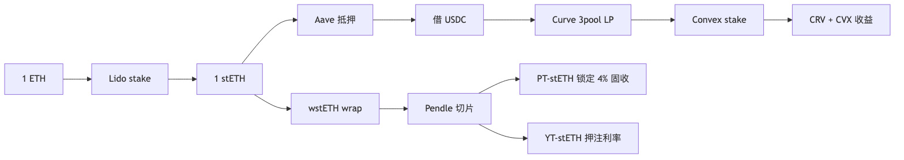
这条链每多一个箭头，假设面积就乘上一次。2025-10 USDe 解杠杆事件是 Aave-Pendle 杠杆环（Ch5/Ch12/Ch25）；2026-04 Kelp 事件是 Lido-LayerZero-Aave 跨协议环（Ch24/Ch28）。组合性不是 DeFi 的护城河，是 DeFi 的传染病学。
ETH 是以太坊原生资产，但没有 transferFrom、approve，无法被 DeFi 合约直接调用。
WETH（Wrapped ETH） 解决这个问题：让 ETH 拥有 ERC-20 接口，供所有 DeFi 合约统一调用。
WETH 合约只有约 60 行代码：
// 简化的 WETH9 核心逻辑
contract WETH9 {
string public name = "Wrapped Ether";
mapping(address => uint256) public balanceOf;
function deposit() public payable {
balanceOf[msg.sender] += msg.value;
}
function withdraw(uint256 wad) public {
require(balanceOf[msg.sender] >= wad);
balanceOf[msg.sender] -= wad;
payable(msg.sender).transfer(wad);
}
receive() external payable { deposit(); }
}
1 WETH 永远等于 1 ETH——合约里锁着等量的 ETH。"100% 抵押 + 1:1 自由兑换"是稳定币最稳的设计原型。
Uniswap V4 改了：V4 原生支持 ETH 而不是只支持 WETH，省去 wrap/unwrap 一次的 gas（~24,000 gas），是 DeFi 历史上第一次"native ETH first class"的 DEX。
BTC 上 EVM 链需要桥，当前主流方案：
| 协议 | 模型 | 信任假设 | TVL（2026Q1） |
|---|---|---|---|
| WBTC | BitGo 托管 BTC，以太坊上 1:1 铸 WBTC | 信 BitGo 公司 | ~$10B |
| cbBTC | Coinbase 托管 | 信 Coinbase | ~$3B 增长中 |
| tBTC | threshold ECDSA + 51 节点 | 多签去中心化 | ~$500M |
| FBTC | Antalpha + Mantle 托管 | 信发行方 | ~$1B |
| LBTC（Lombard） | Babylon staked BTC + cubist 托管 | 信 cubist 节点+Babylon | ~$1.5B |
WBTC 中心化风险：2024 年 BitGo 被 BiT Global 部分收购引发市场恐慌——MakerDAO 一度提议把 WBTC 从 DAI 抵押品列表移除，cbBTC 抢走了相当份额。
Babylon 让你把 BTC 在比特币原链上锁住（用 UTXO + EOTS 一次性可提取签名），然后在 Cosmos appchain（Babylon Genesis）上充当 finality provider 的抵押。这是首个"BTC 不离开比特币链就能 stake"的方案，第 23 章详述。这让"BTC 也变成了 yield-bearing asset"——给 BTC DeFi 注入了新代币类别 LST-BTC（如 LBTC、uniBTC）。
法币抵押稳定币按交易量统治 DeFi。机制只有一行：发行方持有 1:1 的现金+短期国债储备，链上代币与储备 1:1 可赎回。所有工程问题都集中在「发行方」三个字——它就是单点。
| 代币 | 发行方 | 储备 | 市值（2026-04） | 关键事件 |
|---|---|---|---|---|
| USDT | Tether Holdings | 现金+短债+商业票据（早期） | ~$140B | 早期透明度差，近年改善 |
| USDC | Circle | 现金（BlackRock 托管）+ 短期国债 | ~$60B | SVB 2023-03 短期脱锚到 $0.88 |
| PYUSD | PayPal + Paxos | 现金+国债 | ~$1.5B | 2023-08 上线，机构通道 |
| FDUSD | First Digital | 现金+国债 | ~$3B | 币安生态推广，亚洲流通 |
| RLUSD | Ripple | 现金+国债（NYDFS 监管） | ~$1B | 2024-12 上线，机构友好 |
USDC 是 可升级合约——Circle 可以随时增发、销毁、冻结任意地址余额。
// USDC 实际代码片段（FiatTokenV2）
function blacklist(address _account) external onlyBlacklister {
blacklisted[_account] = true;
emit Blacklisted(_account);
}
modifier notBlacklisted(address _account) {
require(!blacklisted[_account], "Blacklistable: account is blacklisted");
_;
}
blacklisted[address] 是 storage 中一个 mapping，blacklister 角色（由 Circle 控制）可以把任何地址加入这个 mapping，之后该地址 USDC 余额完全冻结。
真实使用： - 2022-08 Tornado Cash 制裁：Circle 在数小时内冻结所有"OFAC SDN"列表里的地址。 - 2023-03 SVB 风波：Circle 把 USDC 在 SVB 的 $3.3B 储备透明披露，但当晚仍恐慌脱锚到 $0.88，第二天美联储救助 SVB 后回锚。
DeFi 协议的应对： - Aave、Compound 默认接受 USDC 风险（Circle 没动机大规模冻结，一次操作毁掉信任）。 - LUSD（Liquity）刻意不接受 USDC 抵押，作为"USDC 出问题时的避风港"——2023-03 SVB 事件中 LUSD 一度溢价到 $1.05+。
USDT 早期持有大量商业票据（含恒大）；近年改成 80%+ 国债，但仍仅提供 attestation 而非 audit。市值龙头地位靠亚洲 OTC、CEX 永续保证金、新兴市场美元化支撑。
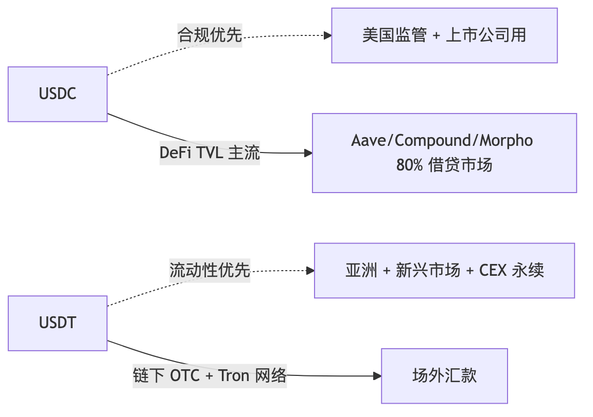
2026-Q1 稳定币市场结构（按市值占比）： - USDT ~46% - USDC ~20% - USDe / sUSDe ~2%（恢复中） - DAI/USDS ~3% - 其它（FDUSD、PYUSD、RLUSD、TUSD、USDP 等）~5% - LST / RWA / 算稳类合计 ~24%
DeFi 工程师选币随场景：借贷主资产用 USDC（合规）；永续保证金用 USDT（CEX 流动性深）；新兴市场 onramp 用 USDT；机构合规通道用 PYUSD / RLUSD。
法币稳定币把信任压在发行方。CDP 把信任压在「抵押品价格 + 清算机制」——锁一笔超额抵押品，铸出稳定币，价格跌穿阈值时第三方清算还原。下面所有 CDP 协议都是这个模板的变体；本章关注差异，清算机制本身在 Ch13 一次讲完。
CDP（Collateralized Debt Position）：合约里锁抵押品，按抵押率铸稳定币。链上资产（ETH/BTC/wstETH）由此产生稳定币流动性，无需信任发行方——只需信任「清算人会准时来」（Ch13）。
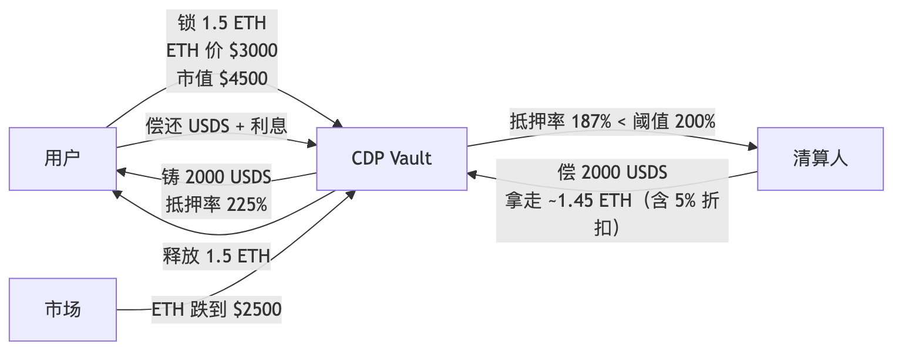
MakerDAO 在 2024-08 改名 Sky 协议，2025-05 完成 Endgame 转型——MKR 退役改 SKY，DAI 1:1 可升级 USDS。来源：Maker rebrands to Sky。
2026-04 状态： - USDS 供应量 > $9B - DAI 仍存在但产品力被冻结 - SSR（Sky Savings Rate） 在 3.75%-4.5% APY，sUSDS 是其 ERC-4626 包装 - 2026-04-07 启动大规模 DAI → USDS 自动迁移（OKX、Binance 等交易所完成）
来源：DAI-USDS Migration April 2026、USDS Sky Protocol 2026 Yield Guide。
Sky Endgame 引入 SubDAO（子 DAO）模式：六个 SubDAO 各自有治理权 + 专门用途代币，分工管理不同业务线。来源：Sky Forum SubDAO Governance。
Spark（首个 SubDAO，2023 上线）： - SparkLend = Aave V3 fork，专做 DAI/USDS 流动性 - $2.5B Obex 配置 → 大部分协议收入来自 RWA - 2026-03 SparkLend TVL ~$3.25B；Spark Liquidity Layer ~$5.24B - 2025-06 Spark targets up to $1.1B 直接敞口 USDe/sUSDe——把 Sky 流动性引向 Ethena 系——这种交叉敞口在 2025-10 USDe 杠杆解杠杆事件中成为传播路径。来源：Spark + Ethena exposure。
PSM（Peg Stability Module，锚定稳定模块） 让用户用 USDC 1:1 换 DAI/USDS。这事实上把法币稳定币的稳定性嫁接到链上——代价是 DAI/USDS 本质上有相当一部分是 USDC 的 wrapper。
Liquity V1 设计极简： - 只接受 ETH 抵押。 - 最低抵押率 110%（Aave/Maker 都 150%+）。 - 一次清算分两层：(1) Stability Pool 提供 LUSD 即时偿还借款；(2) Stability Pool 不够时按比例重分配给其它 borrower。 - 没有治理代币、没有可升级合约、没有 PSM。
清算流程：
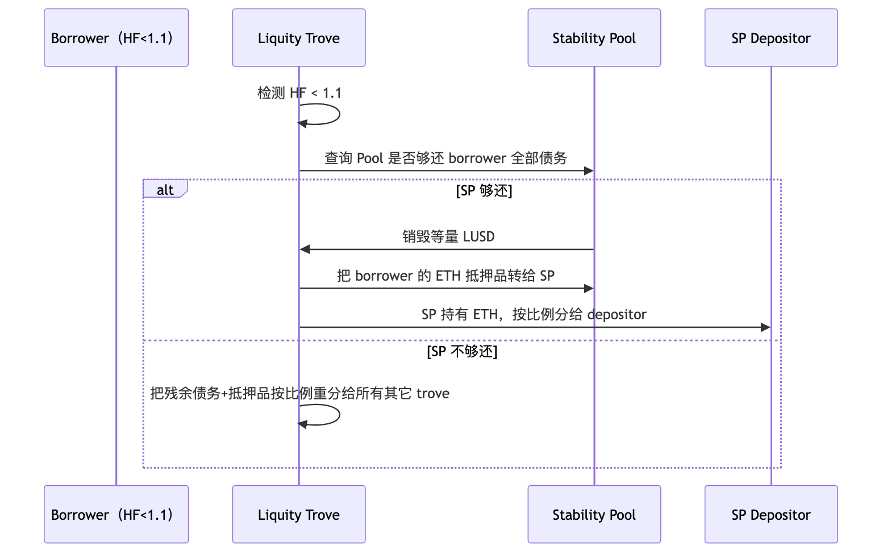
这种极简设计在 2023-03 USDC 脱锚（SVB 风波） 时反而成为 DeFi 安全港——LUSD 短暂溢价到 $1.05+，因为它不依赖 USDC 抵押。
Liquity V2 在 2024 推出：用户自报利率（borrower 自己设 IR、IR 越低被清算优先级越高）；接受 wstETH/rETH 抵押；引入 BOLD 稳定币。
GHO 由 Aave 借贷池里的抵押品支撑——你在 Aave 存 ETH 借 GHO，GHO 直接铸造（而非从 reserve 借出）。GHO 是 Aave 经济护城河——把 Aave 的"借贷利息"内部化成 GHO 协议利润。
stkGHO 与 sGHO（2026-04）： - 老 stkGHO：在 Umbrella Safety Module 里有 slash 风险（2026-04 治理决议把 slash% 改为 0） - 新 sGHO（Savings GHO）：no slash, no cooldown, 5% APR - 新 stkGHO-Umbrella vault：愿意承担 slash 风险换更高收益的用户 - 当前 stkGHO 5% APY < sGHO 风险无 → 治理论坛在讨论 Merit redirect
来源：Aave Umbrella Docs、Aave Umbrella Stake Help。
crvUSD 用改造版 StableSwap 做 CDP，核心是 LLAMMA（Lending-Liquidating AMM） 软清算机制。第 9 章详述数学。
把"现货 long"和"永续 short"按等额相抵——组合美元价值不随 ETH 涨跌变化（delta=0），那这组合本身就可以充当稳定币。无需法币储备、无需 CDP 抵押率，只需 CEX 永续合约保证金存得住。
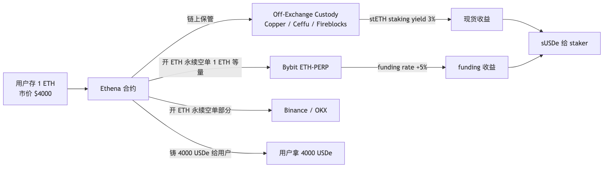
Delta：标的价格变化 $1 美元、组合价值变化几美元。
设用户存 $x$ ETH，市价 $p_0$： - 现货 long delta = $+x$ - 永续 short delta = $-x$ - 组合 delta = $0$
ETH 涨跌都不影响组合美元价值——但只是 mark-to-market 意义上的不变。
delta = 0 不等于「USDe 自然 1:1 锚定」。三个独立风险层：(a) 永续 funding 倒挂——短端熊市永续多头收 funding，收益为负，sUSDe 反向蚀本；(b) 保证金率波动——ETH 急涨触发 maintenance margin，deleveraging 过程中 delta 短暂偏离 0；(c) CEX custody risk 是非线性的——Bybit / Binance 任一冻结/hack，整段对冲腿失效，损失不是线性折价而是阶跃。USDe 锚定本质是 delta-neutral + counterparty + funding-positive 三重假设的合成产物，而非纯数学锚定（详见 §5.1.3 与 2025-10 解杠杆事件）。
收益来源： 1. 现货 stETH staking yield ≈ 3% 2. ETH 永续 funding rate（多头付空头）：2024 牛市 ≈ 11%、2025 ≈ 5%、2026Q1 ≈ 3-4% 3. 基差（spot vs futures spread）
来源：Ethena Delta-Neutral Stability、Coin Metrics Ethena。
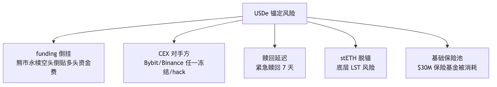
2025-10 解杠杆事件：USDe 供应从 $14B 缩到 $5.92B。原因：Aave-Pendle 杠杆循环——大量用户把 USDe 抵押到 Aave/Spark 借 USDC，再去 Pendle 买 PT-USDe 锁固收，循环 5-10 倍杠杆。当 funding rate 在 10 月暴跌、PT-USDe 隐含 APR 跌穿循环成本时，所有人同时解杠杆。
2026-04 数据： - USDe 供应 ~$6B（恢复中） - sUSDe 收益约 3.72% - 2026 推出 iUSDe（机构合规版，KYC 通道、合规储备报告）
来源：Ethena Q1 2026 Report、Ethena Review 2026。
AMO（Algorithmic Market Operations，算法市场操作）：稳定币协议的"中央银行公开市场操作"——算法决定何时增/减发稳定币以稳定锚定，何时把闲置抵押品调到外部协议赚收益反哺协议。
例如：Curve AMO 在 frxUSD/USDC 池子价格 < 1 时从池子买出 frxUSD 销毁；> 1 时铸 frxUSD 卖入。Aave AMO 把 USDC 储备存到 Aave 赚 supply rate。FIP-434（2025）扩展到 Aave v4 hub-and-spoke + Morpho curated vault。来源：Frax V3 RWA、FIP-434 Forum。
USDM（Mountain Protocol）：100% 短期国债支撑，所有持有者享受底层国债收益（rebase 模式，每天余额自增）。Mountain 是 Bermuda 监管的 EMI 持牌机构。
RWA 稳定币谱系： - USDM（Mountain）：rebase, 全部国债 - USYC（Hashnote）：机构级，DAI 后端核心抵押之一 - buidl（BlackRock）：tokenized money-market fund，Frax/Sky/Ondo 都用它做底层 - Ondo USDY：Ondo Finance 的国债 token
当大家都用 BUIDL 做底层时，BUIDL 自己就是单点风险。
Usual Protocol 推出 USD0（RWA 国债 + USYC 抵押）+ USD0++（流动性锁仓版）+ USUAL（治理代币）的三代币模型。USD0 持有者可以质押换 USD0++（4 年锁定）拿 USUAL 通胀奖励。
经济学：USUAL 通胀 = USD0++ supply × inflation rate。理论上 protocol 用 RWA 国债收益（4-5%）支撑 USUAL 持续买回。风险：如果 USUAL 价格因抛压跌穿"锁仓溢价值"，USD0++ 持有者会有恐慌赎回压力。
USD0 在 2025 年达到 $1.5B 规模，2026 因 USUAL 价格调整有所回落。
UST（Terra）2022-05 崩盘——纯算法稳定币的死亡螺旋。详细复盘见第 28 章。
UST 之后的尝试： - FRAX 转型：从混合算稳完全转向 RWA。 - GHO：超额抵押 + 治理控制利率（混合）。 - USDe：合成而非算法（有真实抵押+对冲）。
结论：纯算法稳定币（无抵押 + 双代币铸销）2026 年基本绝迹。任何号称"无外部抵押算法稳定"的设计都该被默认怀疑。
x*y=k（Uniswap V2 完整源码 + IL）AMM 三章一次讲完——本章 V2 把恒定乘积、LP 数学、IL、TWAP、闪电贷、PUSH 模式一次推到位；Ch7 把同一套数学映射到 $\sqrt{P}$ 坐标得到 V3 集中流动性；Ch8 把 V3 升级成 singleton + flash accounting + hooks 得到 V4。后续 DEX 章节（Curve / Balancer / Trader Joe / Maverick）只讲对此模板的偏离，不重复推不变量基础。
池里 500 ETH + 1,500,000 USDC，V2 把两数相乘作为"不变量"：
k = 500 × 1,500,000 = 750,000,000
交易后 x_new × y_new ≥ k——所有合法状态在这条双曲线上：
y
│
│ ╲
│ ╲
│ ╲ <-- 当前状态点 (500, 1,500,000)
│ ╲
│ ╲___
│ ─────
│ ────── y = k / x
└──────────────────────── x
拿出 1 ETH 必须把 USDC 推到曲线另一点——这就是滑点的来源。
设储备 (x, y)，输入 Δx token0，求输出 Δy token1。
第一步：V2 固定 0.3% 手续费，实际进池 Δx · 997 / 1000。
第二步：不变量约束：
$$ \left(x + \frac{997 \cdot \Delta x}{1000}\right)(y - \Delta y) \geq xy $$
第三步：取等号求输出：
$$ \Delta y = \frac{0.997 \Delta x \cdot y}{x + 0.997 \Delta x} $$
举例 1：池里 500 ETH / 1,500,000 USDC，用 1 USDC 换 ETH：
$$ \Delta y_{ETH} = \frac{0.997 \times 1 \times 500}{1{,}500{,}000 + 0.997} \approx 0.0003323 \text{ ETH} $$
折合 1 ETH ≈ $3,009.5，比公允价 $3,000 多 0.32% 滑点+手续费。
举例 2：用 100,000 USDC 大额交易得 ~31.16 ETH，公允应得 33.33 ETH——滑点 6.5%，大额走聚合器分单的原因。
初次添加流动性时：
liquidity = sqrt(amount0 × amount1) - MINIMUM_LIQUIDITY
MINIMUM_LIQUIDITY = 1000，永久锁在 0xdead。
sqrt(x*y) 是 LP 持仓的"几何价值"——对资产相对价格不敏感，只对总流动性敏感。
MINIMUM_LIQUIDITY 防 inflation attack：如果没有这 1000 wei：
50e18 * 1 / 100e18 = 0.5 向下取整 = 0。存款被吞。锁死 1000 wei 让攻击者先吃损失，且把单份 LP 最小价值压低让小额存款不因取整被吞。来源：RareSkills UniV2 mint/burn。
mint（添加流动性）：
function mint(address to) external lock returns (uint liquidity) {
(uint112 _r0, uint112 _r1,) = getReserves();
uint balance0 = IERC20(token0).balanceOf(address(this));
uint balance1 = IERC20(token1).balanceOf(address(this));
uint amount0 = balance0 - _r0; // PUSH 模式：路由器先转进来
uint amount1 = balance1 - _r1;
bool feeOn = _mintFee(_r0, _r1);
uint _totalSupply = totalSupply;
if (_totalSupply == 0) {
liquidity = Math.sqrt(amount0 * amount1) - MINIMUM_LIQUIDITY;
_mint(address(0), MINIMUM_LIQUIDITY);
} else {
liquidity = Math.min(amount0 * _totalSupply / _r0,
amount1 * _totalSupply / _r1);
}
require(liquidity > 0, 'INSUFFICIENT_LIQUIDITY_MINTED');
_mint(to, liquidity);
_update(balance0, balance1, _r0, _r1);
if (feeOn) kLast = uint(reserve0) * reserve1;
}
关键工程模式：
- PUSH 模式：路由器先把 token 转进来，合约比较 balance 和 reserve 推算输入量。副作用：无许可 flash swap。
- lock reentrancy 保护：布尔锁。Curve 2023-07 事件是此保护被 Vyper 编译器 bug 失效。
swap（核心交易，闪电贷的根源）：
function swap(uint amount0Out, uint amount1Out, address to, bytes calldata data) external lock {
require(amount0Out > 0 || amount1Out > 0, 'INSUFFICIENT_OUTPUT_AMOUNT');
(uint112 _r0, uint112 _r1,) = getReserves();
require(amount0Out < _r0 && amount1Out < _r1, 'INSUFFICIENT_LIQUIDITY');
uint balance0; uint balance1;
{
if (amount0Out > 0) _safeTransfer(token0, to, amount0Out);
if (amount1Out > 0) _safeTransfer(token1, to, amount1Out);
// === FLASH SWAP 入口 ===
if (data.length > 0)
IUniswapV2Callee(to).uniswapV2Call(msg.sender, amount0Out, amount1Out, data);
balance0 = IERC20(token0).balanceOf(address(this));
balance1 = IERC20(token1).balanceOf(address(this));
}
uint amount0In = balance0 > _r0 - amount0Out ? balance0 - (_r0 - amount0Out) : 0;
uint amount1In = balance1 > _r1 - amount1Out ? balance1 - (_r1 - amount1Out) : 0;
require(amount0In > 0 || amount1In > 0, 'INSUFFICIENT_INPUT_AMOUNT');
{
uint balance0Adjusted = balance0 * 1000 - amount0In * 3;
uint balance1Adjusted = balance1 * 1000 - amount1In * 3;
require(balance0Adjusted * balance1Adjusted >= uint(_r0) * _r1 * 1000**2, 'K');
}
_update(balance0, balance1, _r0, _r1);
}
Flash swap 时序：
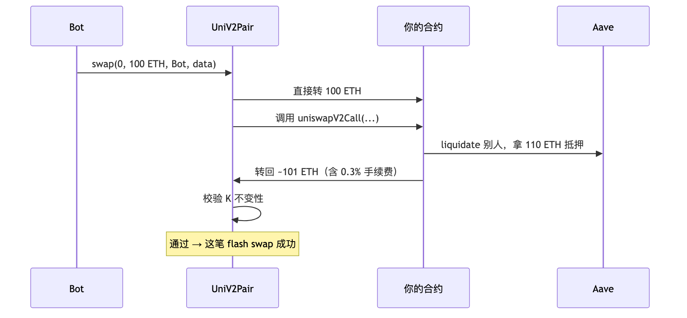
bZx 2020-02 两次事件就是 flash swap+oracle 操纵的组合拳。
设初始价格 $p_0$、提供 $x_0$ 个 token0 和 $y_0 = x_0 p_0$ 个 token1，则 $k = x_0^2 p_0$。
价格变成 $p_1 = p_0 \cdot r$ 时，新储备 $(x, y)$ 满足 $xy = k$ 且 $y/x = p_1$：
$$ y = x_0 p_0 \sqrt{r}, \quad x = \frac{x_0}{\sqrt{r}} $$
LP 价值：$V_{LP} = y + x \cdot p_1 = 2 x_0 p_0 \sqrt{r}$
HODL 价值：$V_{HODL} = y_0 + x_0 \cdot p_1 = x_0 p_0 (1 + r)$
无常损失：
$$ IL(r) = \frac{V_{LP}}{V_{HODL}} - 1 = \frac{2\sqrt{r}}{1+r} - 1 $$
| $r$ | 1.25 | 1.5 | 2 | 4 | 5 | 10 | 100 |
|---|---|---|---|---|---|---|---|
| IL | -0.6% | -2.0% | -5.7% | -20% | -25.5% | -42.6% | -80.2% |
关键结论：IL 单调递增于价格偏离（无论涨跌）。LP 必须靠手续费弥补 IL。
设年化 fee yield $f$，价格年化波动率 $\sigma$，期望 IL $\approx -\frac{\sigma^2}{8}$（小波动近似），LP 净收益 $\approx f - \frac{\sigma^2}{8}$。
举例：ETH/USDC 0.05% 池，fee yield ~10%，vol ~80%，IL 期望 ~-8%，净收益 ~+2%。vol 涨到 120% 时净亏 -8%——这就是大行情前 LP 撤资的原因。
每次状态更新时累加 reserves 比的时间加权积分：
function _update(uint balance0, uint balance1, uint112 _r0, uint112 _r1) private {
uint32 blockTimestamp = uint32(block.timestamp % 2**32);
uint32 timeElapsed; unchecked { timeElapsed = blockTimestamp - blockTimestampLast; }
if (timeElapsed > 0 && _r0 != 0 && _r1 != 0) {
price0CumulativeLast += uint(UQ112x112.encode(_r1).uqdiv(_r0)) * timeElapsed;
price1CumulativeLast += uint(UQ112x112.encode(_r0).uqdiv(_r1)) * timeElapsed;
}
reserve0 = uint112(balance0); reserve1 = uint112(balance1);
blockTimestampLast = blockTimestamp;
}
外部合约两次采样取差除以时间差得 TWAP：
$$ \text{TWAP}_{[t_0, t_1]} = \frac{\text{cumulative}(t_1) - \text{cumulative}(t_0)}{t_1 - t_0} $$
采样间隔需足够长（10 分钟+），操纵单区块成本才高于 TWAP 上可获收益。短间隔 TWAP 不抗操纵。
Cream 用 yUSD（Yearn vault share token）做抵押估值。而不是用底层资产的 V2 TWAP——它直接读 vault.totalAssets() / totalSupply 作为 share-price。攻击者用闪电贷给 yVault 直接转入资产把 share-price 拉到 2 倍，再用同一笔 yUSD 借走 $130M。
根因：用了可被外部 donation 操纵的 share-price，而非底层资产市场价 + TWAP。来源：Immunefi Cream Analysis。
V2 累加 priceCumulativeLast 时用了 UQ112x112 自定义定点数。直觉：把"reserve1 / reserve0"的浮点除法用整数模拟，溢出在 V2 里被刻意接受（uint256 累加的结果可以 wraparound——消费者两次采样取差时 wraparound 自然抵消）。
library UQ112x112 {
uint224 constant Q112 = 2**112;
function encode(uint112 y) internal pure returns (uint224 z) {
z = uint224(y) * Q112; // 把 reserve 编码为 .112 定点
}
function uqdiv(uint224 x, uint112 y) internal pure returns (uint224 z) {
z = x / uint224(y);
}
}
为什么 112 而不是 96？ 因为 V2 reserves 用 uint112 存储（两个 reserve + uint32 timestamp 塞进一个 32-byte storage slot）。Q112 让 reserve 范围最大化的同时保留充分小数精度。
为什么 wraparound 不出问题？ (cumulative_t1 - cumulative_t0) 取差时，只要相对差值在一个 wraparound 周期内，EVM 整数减法自然正确。
实际用户调用的不是 UniswapV2Pair.swap，而是 UniswapV2Router02.swapExactTokensForTokens：
function swapExactTokensForTokens(
uint amountIn,
uint amountOutMin,
address[] calldata path, // [tokenA, tokenB, tokenC] 多跳
address to,
uint deadline
) external returns (uint[] memory amounts) {
amounts = UniswapV2Library.getAmountsOut(factory, amountIn, path);
require(amounts[amounts.length - 1] >= amountOutMin, 'INSUFFICIENT_OUTPUT_AMOUNT');
TransferHelper.safeTransferFrom(path[0], msg.sender, UniswapV2Library.pairFor(factory, path[0], path[1]), amounts[0]);
_swap(amounts, path, to);
}
function _swap(uint[] memory amounts, address[] memory path, address _to) internal {
for (uint i; i < path.length - 1; i++) {
(address input, address output) = (path[i], path[i + 1]);
(uint amount0Out, uint amount1Out) = input < output ? (uint(0), amounts[i + 1]) : (amounts[i + 1], uint(0));
address to = i < path.length - 2 ? UniswapV2Library.pairFor(factory, output, path[i + 2]) : _to;
IUniswapV2Pair(UniswapV2Library.pairFor(factory, input, output)).swap(amount0Out, amount1Out, to, new bytes(0));
}
}
关键技巧：每跳 to 不是用户而是下一个池子——前跳输出 token 直接落入下跳余额，免去中间 transfer。这种"PUSH 模式 + 链式 to"是 V2 路由器最聪明的设计。
if (data.length > 0) 是闪电贷入口。攻击者怎么用它配合 oracle 操纵借贷协议？画时序图。sqrt(x*y) 是单调递增的（前提 K 单调递增）？V2 把流动性铺到 $(0, \infty)$，但 ETH/USDC 池 99% 的交易发生在 ±20% 区间——绝大部分流动性闲置。V3 让 LP 选区间 $[p_a, p_b]$，在区间内表现为虚拟 V2 池（同一条 $xy=k$ 曲线截断），出区间则曲线接到端点的水平/垂直渐近线。所有 V3 数学都是 Ch6 V2 推导在 $\sqrt{P}$ 坐标系下的代换——不需要从零再推。
V2 V3（LP 集中在 [2800, 3200]）
y │ ╲ y │
│ ╲ │
│ ╲___________ │ ╲
│ ╲ │ ╲
│ ╲___ │ ╲___
└─────────────── x └─────────── x
2800 3200
V3 资本效率在区间内提高约 1000x，代价是单边持有风险：价格穿出区间时 LP 全变成单边那个币。
V3 用 $\sqrt{P}$ 做内部坐标，流动性 $L$：
$$ L = \sqrt{xy} $$
在区间 $[p_a, p_b]$ 内提供 $L$，当前价格 $P \in [p_a, p_b]$ 时实际持仓：
$$ x = L \left( \frac{1}{\sqrt{P}} - \frac{1}{\sqrt{p_b}} \right), \quad y = L \left( \sqrt{P} - \sqrt{p_a} \right) $$
为什么 $\sqrt{P}$？ 因为流动性 $L$ 在 $\sqrt{P}$ 坐标下是常数。来源：Uniswap V3 Math Primer、RareSkills sqrtPriceX96。
$$ \text{sqrtPriceX96} = \sqrt{P} \cdot 2^{96} $$
为什么 96？ - $P$ 范围 $[2^{-128}, 2^{128}]$ - $\sqrt{P}$ 范围 $[2^{-64}, 2^{64}]$ - 乘 $2^{96}$ 后落在 $[2^{32}, 2^{160}]$，正好塞 uint160，剩 96 bits 给小数精度
V3 把价格离散化成 ticks：tick $i$ 对应 $P = 1.0001^i$。每跨一 tick，价格变化 1 个基点（0.01%）。TickMath 库用查表 + 位运算 O(1) 算 sqrtRatioAtTick。
| 费率 | tickSpacing | 价格分辨率 | 适用 |
|---|---|---|---|
| 0.01% | 1 | 0.01% | USDC/USDT |
| 0.05% | 10 | 0.10% | 稳定币 / 低波动 |
| 0.30% | 60 | 0.60% | 主流币对 |
| 1.00% | 200 | 2.02% | 长尾资产 |
V3 swap 是逐 tick 推进：
while amountRemaining > 0 and currentTick != targetTick:
nextTick = 找到下一个有流动性变化的 initialized tick
sqrtPriceTarget = sqrtRatioAtTick(nextTick)
(amountIn, amountOut, sqrtPriceNext) = computeSwapStep(
sqrtPriceCurrent, sqrtPriceTarget, liquidity, amountRemaining, fee
)
amountRemaining -= amountIn; amountOut_total += amountOut
if 跨过 nextTick:
# 方向至关重要——zeroForOne（价跌、token0→token1）从右向左跨 tick：
# liquidity -= liquidityNet[nextTick]
# oneForZero（价涨、token1→token0）从左向右跨 tick：
# liquidity += liquidityNet[nextTick]
if zeroForOne:
liquidity -= liquidityNet[nextTick]
else:
liquidity += liquidityNet[nextTick]
currentTick = nextTick
liquidityNet[tick] 记录"从这个 tick 开始流动性变化多少"——LP 在 $[t_a, t_b]$ 提供 $L$ 时 liquidityNet[t_a] += L、liquidityNet[t_b] -= L。让 V3 在 LP 数量任意多时仍 O(跨 tick 数) 完成 swap。
方向陷阱：把方向写错（无论 swap 哪边都 +=）会让 swap 路径上的有效流动性偏离实际 LP 部署，结果是输出量 / 价格更新错——KyberSwap Elastic 类似精度+方向问题在 2023-11 直接导致 $47M 损失（见 §7.7）。Uniswap V3 reference impl 见 UniswapV3Pool.sol#swap 中 liquidityNet 的 if (zeroForOne) liquidityNet = -liquidityNet; 手法。
在区间 $[p_a, p_b]$ 内提供 $L$，等价于 V2 虚拟流动性 $L \cdot \sqrt{p_a p_b} / (\sqrt{p_b} - \sqrt{p_a})$。LP 赚手续费、承担价格突破区间的尾部风险——与 market maker 卖 straddle 同构。
KyberSwap Elastic 是 V3-style 集中流动性 DEX。2023-11-23 损失 $47M。
根因：tick 边界整数舍入方向错。当 swap 量恰好"几乎等于"跨过 tick 边界所需量但又少 1 wei 时（1056056735638220799999 vs 1056056735638220800000），合约没跨 tick 但假设已经跨了——baseL 记录错误，远高于真实状态。攻击者反向 swap 利用状态错误抽走 $47M。
TVL 影响：$71M → $3M。来源：Halborn KyberSwap、BlockSec 精度分析。
教训：tick math 必须做 differential testing（与 V3 reference impl 对拍）；边界条件舍入方向是合约里最容易出错且最致命的细节。
V4 在 2025-01-30 主网上线。AMM 数学本身没变（仍是 V3 的 $\sqrt{P}$/tick 体系），改动全在工程架构上——三件事让 V3 时代的部分外部协议直接成为 V4 hook：
所有池子住在同一个 PoolManager 合约里：创建池子 gas 降 99%（~5M → ~50K）、跨池路由无外部转账（同一 storage）、LP 表示从 NFT 改为内部账本。
借助 EIP-1153 transient storage（每笔交易内的临时存储，交易结束自动清零），V4 在 swap 过程中只记账不结算：
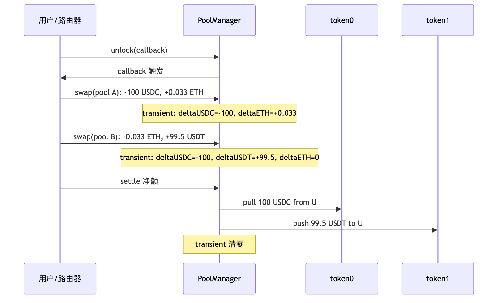
净额结算把多跳路由从"每跳一次 transfer"压缩到"全程一次 transfer"，gas 大幅下降。
每个池子可以绑定一个 hook 合约，在生命周期关键点触发回调：
| 时机 | 钩子函数 |
|---|---|
| 创建池子 | beforeInitialize / afterInitialize |
| 加流动性 | beforeAddLiquidity / afterAddLiquidity |
| 减流动性 | beforeRemoveLiquidity / afterRemoveLiquidity |
| 交易 | beforeSwap / afterSwap |
| 直接捐赠 | beforeDonate / afterDonate |
hook 地址某些 bit 决定支持哪些回调——Uniswap 用"地址前缀编码"省 gas，通过 CREATE2 挖出特定前缀地址。
来源：Awesome Uniswap V4 Hooks、Uniswap v4 TWAMM Hook、Three Sigma V4 Features。
| 类别 | 实现 | 作用 |
|---|---|---|
| 大单切片 | TWAMM Hook | 把大单切成数千微小订单跨多个区块执行 |
| 动态费率 | Bunni v2、Brevis volatility hook | 按波动率/流量自动调整费率 |
| 限价单 | Cork、Limit Order Hook | 在指定 tick 触发链上限价单 |
| MEV 防御 | Sorella Angstrom | App-Specific Sequencer，把交易排序权拍卖给 LP |
| MEV 返利 | Detox Hook（Pyth + 套利识别）、Bunni | 把 sandwich 利润退给 LP |
| MEV 受害者补偿 | MEVictim Rebate | 链上识别历史 MEV 受害地址，pool 内补偿 |
| 隐私 | Privacy-preserving swap hook | 用 ZK 隐藏 swap 量 |
| 储蓄/复利 | Savings Vault Hook | LP 收益自动复投到外部 vault |
| IL 对冲 | IL hedging hook | 用期权或保险产品对冲 LP IL |
| 白名单/KYC | Permissioned Pool | 限制谁能 swap 或 LP |
统计：截至 2025 年中已 5000+ hook 池被初始化、累计交易额 $190B。Bunni v2 是当前 hook 类 TVL/交易量第一，Angstrom 是 MEV 防御代表。来源：Awesome V4 Hooks 仓库。
hooks 安全模型是 "信任你选的池"——每个池在创建时绑定一个 hook 合约，LP 进入前必须自行审计。恶意 hook 可以：
- 在 beforeSwap 把费率改成 99%
- 在 afterAddLiquidity 把 LP token 转走
- 在 beforeDonate 篡改其它用户状态
"协议安全"责任转移给 hook 作者。前端和聚合器必须维护 hook 白名单——这是 V4 设计上最大的取舍。
Ch6 V2 的 $xy=k$ 在稳定币之间太陡——同一池里 USDC/USDT 任意小额 swap 都付 0.3%+ 滑点。极限的另一头是恒定和 $x+y=k$（零滑点），但任一边归零池子被掏空，无法做市。Curve StableSwap 在两者之间插值：价格接近 1:1 时退化成恒定和（无滑点），偏离时退化成恒定乘积（保护池子不被掏空）。
n 资产 StableSwap：
$$ A n^n \sum_{i=1}^n x_i + D = A n^n D + \frac{D^{n+1}}{n^n \prod_{i=1}^n x_i} $$
3pool（USDC + USDT + DAI）的 A=2000，crv-frax A=1500。A 越大平段越宽，越接近恒定和。
合约里没法解析求解 D 或 $x_i$，得用 Newton 迭代。
求 D：
$$ D_{k+1} = \frac{A n^n S \cdot D_k + n D_P D_k}{(A n^n - 1) D_k + (n+1) D_P} $$
通常 < 10 次收敛。来源：RareSkills get_D get_y、Curve StableSwap 数学指南。
LLAMMA（Lending-Liquidating AMM）：抵押品被切成多个 price band，价格穿过 band 时合约自动按比例把抵押品换成 crvUSD（软清算），价格回升时再换回来（de-liquidation）。
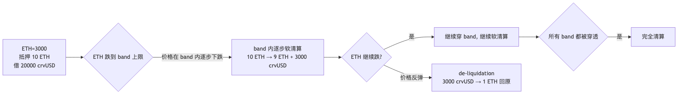
优点：避免暴跌一秒被强平。缺点：反复穿 band 的"震荡损耗"持续侵蚀抵押品——借款人被 LP 化。
受害池：alETH/ETH（$22.6M）、msETH/ETH（$3.4M）、pETH/ETH（$11M）、CRV/ETH（$24.7M），共 $73M。
根因：Vyper 编译器 0.2.15、0.2.16、0.3.0 的 @nonreentrant 装饰器把 lock 标志和其它变量塞到同一 storage slot，导致 lock 在某些路径下失效。攻击者调用 add_liquidity → ETH 转账触发 fallback → reentrancy 进入 remove_liquidity → 因为 lock 失效得以执行 → 池子状态错乱后用低价买走代币。
根因不在协议代码——工具链 0day。来源：Halborn Vyper Bug、LlamaRisk 复盘。
本章三个 DEX 都是 V2 恒定乘积的变体——Balancer 改"等权"为"加权"，Maverick 改"被动 LP"为"方向 LP"，Trader Joe LB 改"连续 tick"为"离散 bin"。Ch6/Ch7 的 LP 数学和 IL 公式仍适用。
加权池不变量是 V2 $xy=k$ 推广到带权重的几何平均：$\prod_{i=1}^n x_i^{w_i} = k$，$\sum w_i = 1$（取 $w_i = 1/n$ 即退化回 V2）。
80/20 BAL/WETH 池：LP 持有"自动再平衡的指数组合"——swap 流动让池保持 80/20 市值比例。代价：BAL 大涨时 IL 比 50/50 池更大（敞口偏一边）。
V3 改动：hooks 与池类型解耦（同一 hook 可挂 WeightedPool 和 StablePool，与 V4"每池一 hook"不同）；ERC-4626 buffer 让收益代币直接作 LP 资产；V2 composable pool 安全隐患被 ERC-4626 buffer 取代。
来源：Balancer V3 Hooks、Mixbytes Balancer V3。
LP 选 4 种模式：Right（跟涨）、Left（跟跌）、Both（双向）、Static（V3 行为）。V2 引入 Boosted Positions 把激励代币精准发给特定 tick 范围，Direct Match（最高 100% 匹配外部激励）+ Vote-Match（veMAV 加成）。本质：V3 + 自动跟随价格 + 项目方定向发激励。来源：Maverick V2 Boosted、Maverick Phase II。
用离散 bin 替代连续 tick，每 bin 恒定和 x + y * P = const。优势：滑点计算 O(1) 可预测；变动费率按 bin 内交易频率自适应，波动大时 LP 自动收更高费。
TVL（2026Q1）：Joe V2/V2.1/V2.2 多版本共存，主链 Avalanche + Arbitrum + BSC，整体 ~$200M。来源：DefiLlama Joe。
PancakeSwap 在 2025-04 发布 Infinity（即 PancakeSwap v4），定位与 Uniswap V4 类似——支持 V2 classic / V3 集中流动性 / Infinity hook 三种池共存。BNB Chain 上 V3 TVL ~$978M（2026-04）。来源：PancakeSwap Infinity 发布。
Andre Cronje 在 Solidly 引入，Velodrome（Optimism）、Aerodrome（Base）继承。
核心机制：锁仓治理代币换 veToken（time-lock NFT，锁越久权重越大）；veToken 持有人投票决定每周通胀代币分配；LP 拿通胀，投票人拿 100% 池子手续费——形成"贿赂市场"，项目方向 ve-holder 送 bribe 换票。
(3,3)：博弈论纳什均衡——双方合作收益 (3,3)，一方叛逃 (-1,-1)。ve(3,3) = veCRV 锁仓权益 + OlympusDAO stake 文化。
Aerodrome 与 Velodrome 合并：2026 Q2 计划合并为统一平台 Aero。这是首例 L2 上"龙头 DEX 跨链合并"。来源：Aerodrome 设计。
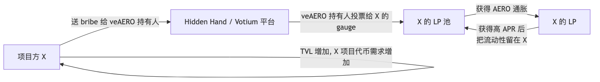
问题：bribe 成本 > 池子真实收益 → 贿赂市场负和，长期变成"通胀稀释 vs bribe 补贴"博弈。
| 维度 | ve(3,3) | V4 hooks |
|---|---|---|
| 协议层抽象 | LP 池 + 治理代币双层 | 池+hook 单层 |
| LP 激励 | 通胀代币 + bribe | hook 自定义（动态费、MEV 返利） |
| 资本效率 | V2 风格，IL 风险大 | V3/V4 集中流动性 |
| 代表项目 | Aerodrome / Velodrome | Bunni / Angstrom / Detox Hook |
趋势：新协议多为 hybrid——ve(3,3) 治理 + V4 hooks 资本效率。
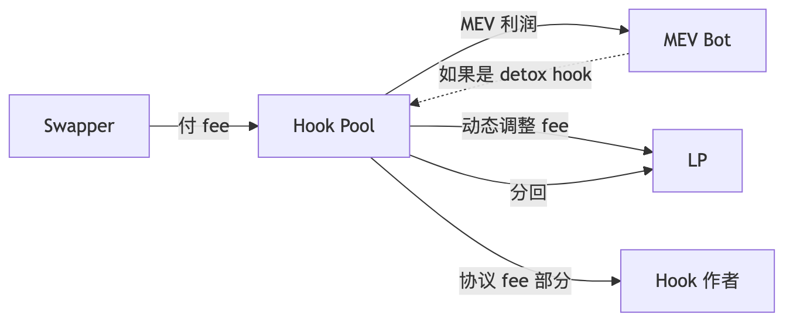
V4 hooks 让协议作者抽 fee 成为可能（V3 没有）。Bunni 等通过 hook 抽 LP 收入 5-10%，这是"real yield"模式。
借贷六章（Ch12-17）共享同一抽象骨架：(供给/借款利率 + 利率曲线) × (HF + 清算机制) × (抵押模型)。Ch12 一次讲利率曲线，Ch13 一次讲健康因子和清算时序，Ch14-17 各借贷协议只讲它对这个骨架的偏离——共享池（Aave）/ 单基础资产（Comet）/ 隔离市场（Morpho）/ KYC 信用（Maple）。
借贷协议的利率由利用率（utilization） $U$ 单变量驱动：
$$ U = \frac{\text{borrows}}{\text{supplies} + \text{borrows} - \text{reserves}} $$
U=0 没人借，U=100% 全借光。U 越高，资源越稀缺，利率越高。
超过 kink（通常 80%）后利率陡升：
$$ \text{borrowRate}(U) = \text{base} + \text{slope}_1 \cdot \min(U, k) + \text{slope}_2 \cdot \max(0, U - k) $$
例：USDC 池：base=0%、slope1=4%、kink=80%、slope2=100%。U 从 0→80% 借贷率 0→3.2%；U 从 80%→100% 借贷率从 3.2% 飙到 23.2%。
borrowRate (%)
│ /
25│ /
20│ /
15│ /
10│ /
5│ ____ /
0│____/
└──────────────────── U (%)
0 20 40 60 80 100
^ kink
陡峭的 slope2 是自动稳定器：U → 100% 时高利率激励还款 + 吸引新存款。来源：Compound JumpRateModel、Aave 利率模型。
Aave V3 对每类资产用不同曲线：
| 资产类 | kink | slope1 | slope2 |
|---|---|---|---|
| Stablecoin（USDC/USDT/DAI） | 92% | 3.5% | 60% |
| Volatile（ETH/BTC） | 80% | 3.8% | 80% |
| Isolation 资产 | 45-60% | 7% | 300% |
e-mode（efficiency mode）：相关性高的资产对（ETH/stETH、USDC/USDT）划入同一 category，LTV 提高到 93%（默认 75%）。是 Ethena 系 Aave-Pendle 杠杆循环的基础。
每市场只能借一种基础资产（通常 USDC），抵押物只能存不能借。
function getSupplyRate(uint utilization) external view returns (uint64) {
if (utilization <= supplyKink) {
return supplyPerSecondInterestRateBase
+ mulFactor(supplyPerSecondInterestRateSlopeLow, utilization);
}
return supplyPerSecondInterestRateBase
+ mulFactor(supplyPerSecondInterestRateSlopeLow, supplyKink)
+ mulFactor(supplyPerSecondInterestRateSlopeHigh, utilization - supplyKink);
}
关键差异：supplyRate 不再依赖 borrowRate（V2：supplyRate = borrowRate * U * (1 - reserveFactor)），reserve 由治理直接控制。
V3 优势：抵押品不能借出 → 不被闪电贷耗尽；单一基础资产 → 风险可控；抵押品独立计价 → oracle 异常不污染整个市场。
Morpho Blue 引入 AdaptiveCurveIRM：参数自动跟踪市场出清状态——长时间 U 偏离 target（如 90%）时，曲线自动平移，避免 governance 频繁调参。Frax 也用类似 PID 控制（Proportional-Integral-Derivative）让利率自适应跟随 U。
Morpho AdaptiveCurve 数学（简化）：
$$ r_t = r_{t-1} \cdot \exp(k \cdot (U_t - U_{\text{target}}) \cdot \Delta t) $$
自适应曲线无需治理频繁调参，代价是极端市场下利率可能过冲（U 长时间高位时利率涨到 1000%+）。
假设你想做 5x wstETH/USDC 杠杆循环： - 起始：10 wstETH（市价 $30,000） - 每轮：抵押 wstETH → 借 USDC（按 e-mode 93% LTV）→ swap 成 wstETH → 再抵押
第 1 轮：抵押 10 wstETH，借出 $30000 × 93% = $27,900 USDC，swap 成 9.3 wstETH。
第 2 轮：抵押 19.3 wstETH，借出 $27900 + $25,947 = $53,847（累计），swap 成 8.65 wstETH。
第 3 轮：累计 27.95 wstETH。
第 N 轮：理论上限 = 10 / (1 - 0.93) = 142.86 wstETH。
但实际不能完全循环，因为： 1. 每次 swap 滑点 + gas 成本。 2. Aave borrow rate（动态）随借款增加而上涨。 3. 存款利率 < 借款利率，净 carry 是负的。
盈利条件：wstETH staking yield > USDC borrow rate。一旦 stETH yield 跌或 USDC borrow rate 涨，循环立即解杠杆——2025-10 USDe Aave-Pendle 解杠杆的经济学根因。
这一章是 Ch4 CDP、Ch12 利率曲线、Ch14-17 各借贷协议共享的清算模板。后续协议讲清算时只指出对此模板的偏离（Comet 拆 absorb+buyCollateral 两步、crvUSD 用 LLAMMA 把硬清算改成软清算、Liquity 拆两层 Stability Pool），HF 公式、close factor、闪电贷清算时序不再重复。
$$ HF = \frac{\sum_i (\text{collateralValue}_i \cdot \text{liquidationThreshold}_i)}{\sum_j \text{borrowValue}_j} $$
举例：存 10 ETH（市值 $30,000，LT=82.5%），借 $20,000 USDC：
$$ HF = \frac{30{,}000 \times 0.825}{20{,}000} = 1.2375 $$
触发清算价格：$HF=1 \Rightarrow$ ETH 跌到 $3,000 \times \frac{20000}{24750} \approx \$2{,}424$。
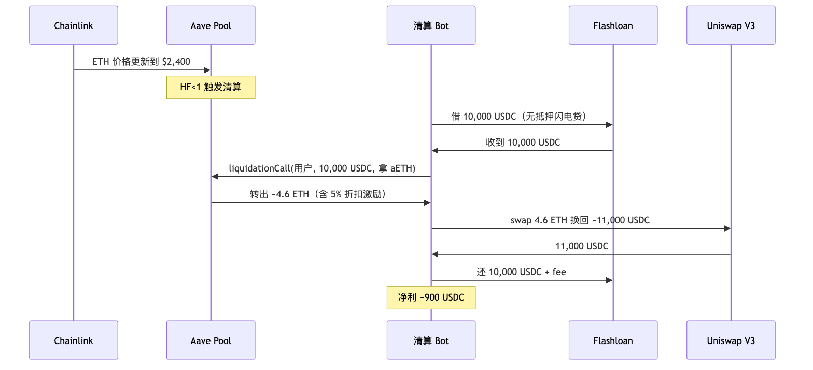
Aave V3 close factor 规则（来源：Aave Help）：默认 50% 单笔；HF<0.95 时 100%；HF∈[0.95,1.0) 但抵押或债务任一 < $2000 时也允许 100%（防尘埃账户）。
| 维度 | 硬清算（Aave/Compound） | 软清算（crvUSD LLAMMA） |
|---|---|---|
| 触发条件 | HF<1 | 价格穿过 band 上限 |
| 清算速度 | 一笔 tx 全清 50% 或 100% | 渐进式按比例 |
| 用户体验 | 暴跌一秒被强平 | 不会一次损失全部 |
| 损耗形式 | 5-10% 清算折扣 | 反复穿 band 的"震荡损耗" |
| 适用 | 所有借贷 | 主要做稳定币 CDP |
Aave 是借贷模板的"参照实现"——共享池 + 多资产抵押 + Ch13 的硬清算 + Ch12.3 的差异化曲线 + e-mode 高 LTV 集群。本章关注三件 Aave 独有的工程：Umbrella 自动 slash、stkGHO/sGHO 演化、共享池在 Kelp 事件中的传染。利率曲线和清算时序见 Ch12/Ch13。
借贷龙头（TVL ~$26B，2026-04 Kelp 事件后 ~$20B，DefiLlama）。架构：
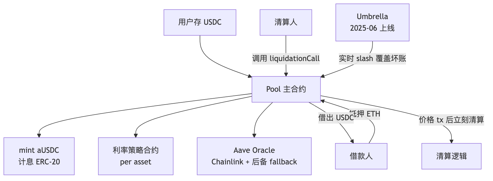
核心组件： - Pool.sol：主入口，所有 deposit / borrow / repay / liquidate 都过这里。 - aToken（aUSDC）：rebase 模式的计息凭证，余额自动累积利息。 - Variable / Stable Debt Token：分别记录浮动利率和稳定利率债务。 - InterestRateStrategy：每个 asset 有独立的利率曲线合约。 - Oracle：聚合 Chainlink + fallback。
Umbrella 在 2025-06-05 上线（来源：Aave Umbrella Docs、LlamaRisk Umbrella 分析）。
老 Safety Module 的问题：出现坏账 → 治理投票决定是否 slash，延迟几天 + 标准模糊 + 覆盖不精准。
Umbrella 设计：
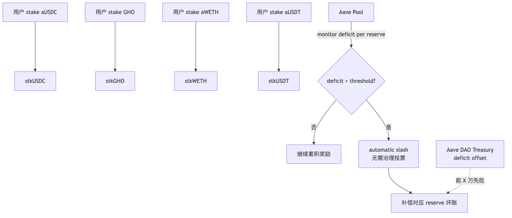
来源：Aave Umbrella Stake Help、Aave Umbrella Help。
| 类型 | slash 风险 | cooldown | APY（2026-04） | 说明 |
|---|---|---|---|---|
| 老 stkGHO | 0%（治理已关） | 20 天 | ~5% | 历史遗留 |
| 新 sGHO（Savings GHO） | 0% | 0 天 | ~5% | 推荐 |
| stkGHO-Umbrella | 风险开放 | 21 天 | 浮动 | 愿意承担 slash |
当前状况：stkGHO ~5% APY < sGHO 风险无 → 治理论坛在讨论 Merit redirect。
Kelp DAO 跨链桥被攻击（1-of-1 DVN 单点被攻陷），$292M 伪造 rsETH 被用作 Aave 抵押借走 wETH，造成 ~$196M 坏账。Aave TVL 单日跌 $6.6B、AAVE 代币跌 16%。完整复盘见第 24.3 节。
来源：Aave Records $6B TVL Drop、rsETH Incident Report。
Aave 视角教训： 1. 借贷协议接受跨链 wrapped 资产做抵押时，必须审计发行方桥的安全模型。 2. Umbrella 自动 slash 有上限——坏账超过 staker 覆盖范围仍需 DAO Treasury。
Compound III（Comet）2022 年起采用单一基础资产模型：每市场只能借一种基础资产（cUSDCv3 等），抵押物只能存不能借。设计动机直接来自 Compound II 时代的事故清单——闪电贷把抵押品池子掏空、oracle 污染传染整个市场（见第 12.4 节）。代价是抵押品闲置带来的资本效率损失，反映在 TVL 上（~$3B vs Aave ~$20B）。
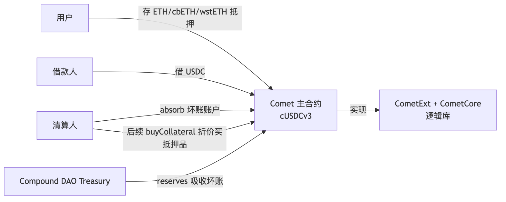
关键概念：
- absorb：清算人调用 absorb(account) 把坏账账户的抵押品转给协议、债务清零（不直接拍卖）。
- buyCollateral：抵押品被协议持有后，任何人可以折价（来自 oracle 价 * discount）买走。
function absorb(address absorber, address[] calldata accounts) external {
for (uint256 i = 0; i < accounts.length; i++) {
absorbInternal(absorber, accounts[i]);
}
}
function absorbInternal(address absorber, address account) internal {
require(isLiquidatable(account), "not liquidatable");
// 1. 把账户的所有抵押品转给协议
for each collateral asset:
transferFromUser(account, address(this), userBalance);
// 2. 把账户的债务清零（协议吸收）
setBaseBalance(account, 0);
// 3. 给 absorber 一个小 reward（来自 reserves）
payRewardToAbsorber(absorber, reward);
}
function buyCollateral(address asset, uint256 minAmount, uint256 baseAmount) external {
// 任何人付 baseAmount USDC，按 oracle 价 * (1 - storeFrontPriceFactor) 折价买抵押品
uint256 collateralAmount = quoteCollateral(asset, baseAmount);
require(collateralAmount >= minAmount);
transferUSDCFromUser(...);
transferCollateralToUser(...);
}
来源：Compound III Docs、RareSkills Compound V3 Book。
| 维度 | Aave V3 | Compound III |
|---|---|---|
| 借出资产 | 几乎所有 listed | 单一基础资产 |
| 抵押品 | 也可以被借 | 只存不借 |
| 清算 | liquidationCall 一步完成 | absorb + buyCollateral 两步 |
| 资本效率 | 高 | 低（抵押品闲置） |
| 安全 | 复杂，需要 e-mode 隔离 | 简单 |
| TVL（2026-04） | $26B | ~$3B |
Compound III TVL 远小于 Aave：抵押品不能借出，资本效率劣势。
共享池（Aave）和单基础资产（Comet）都把"风险评估"留给协议治理。隔离市场把风险评估外包给市场参与者——任何人都可以无许可创建一个 (抵押, 借款, oracle, IRM, LLTV) 五元组，每个市场是独立的破产单元。胜负由 curator/ vault 在上层重新聚合，本质是"先拆碎，后重组"。
核心抽象：
struct MarketParams {
address loanToken; // 借款资产
address collateralToken; // 抵押资产
address oracle; // 预言机合约
address irm; // 利率模型合约
uint256 lltv; // 清算 LTV
}
每市场是一个独立五元组，无许可创建，市场间完全隔离。Morpho Blue ~600 行，审计 8 次。
复杂性移到上层 MetaMorpho vault：curator 创建 ERC-4626 vault，在多个 Morpho Blue 市场间分配资金赚息差。
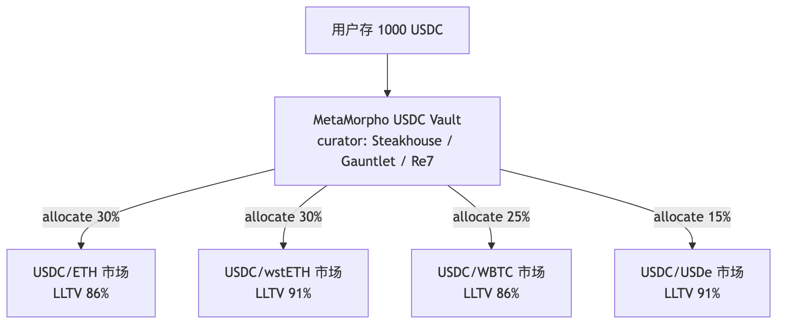
优点：新资产/oracle/利率模型立刻上线（无需 Aave 治理几个月）；curator 专业分工；单市场出事不污染整个协议。缺点：用户选错 curator 全承担；流动性碎片化；curator 竞争可能在风控参数上"内卷"出风险。
Morpho Blue 在 2025 年 TVL 突破 $5B，借贷类增速最快协议之一。
Euler V1 2023-03 事件（$197M）后彻底重写为 Euler Vault Kit（EVK）：任何人可创建定制 vault，vault 间互信形成 vault graph。
EVK 解决了 ERC-4626 inflation attack（用 internal balance tracking 而非 token.balanceOf）——这是 V1 教训的产物。
架构： - EVault：单个 vault 合约，可以被组合。 - Ethereum Vault Connector（EVC）：让多个 vault 在一笔 tx 里被原子化访问。 - Risk steward：可以调参的"半治理"角色。
来源：Euler Donation Attacks 文档、Euler V2 概览。
Silo 用"每对资产一个 silo"模型——你存 USDC 进 ETH-silo，只能借出 ETH，不会接触其它 silo 的风险。Silo V2 在 2025 年迁到 Sonic 链（前 Fantom），TVL ~$558M（2026Q1）。Silo V2 引入 hooks 让任何人创建定制化 silo。来源：Silo V2 Sonic launch。
价格由"buckets"决定——LP 把流动性放在自己愿意接受的价位 bucket，抵押品跌穿 bucket 价时 LP 触发清算。无 oracle → 不会被操纵，但流动性碎片化。TVL <$50M，是"无 oracle"思路的实验场。来源：Ajna 设计、Mixbytes Ajna 解析。
| 协议 | 隔离单元 | 治理 | TVL（2026Q1） |
|---|---|---|---|
| Morpho Blue | (loan, coll, oracle, irm, lltv) 五元组 | curator + treasury | ~$5B |
| Euler V2 | EVault + vault graph | risk steward | ~$1B |
| Silo V2 | 每对资产一个 silo | DAO + curator | ~$558M |
| Ajna | bucket（LP 自选价） | 无 | <$50M |
Ch13-16 的所有协议都是超额抵押——只服务"链上有 ETH 想借 USDC"的零售杠杆需求。企业不会拿 1.5 ETH 抵押借 1 USDC 周转工资，他们要的是基于资质（资产负债表、信用记录、SPV 法律包装）的信贷。链上 KYC 信用市场是这个需求的折衷：链上记账+清算、链下尽调+合同。
Maple 是 2021 起的"链上信用借贷"先驱。机制：
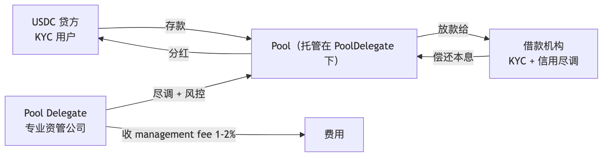
2026 状态（来源：Maple Finance 2026、BeInCrypto Maple Token Buyback）： - TVL ~$3.1B（2025-10 高峰） - 推出 syrupUSDC（2026-01 在 Coinbase Base 链上线）：yield-bearing stablecoin，目标 Aave V3 listing - 加入 Sky Ecosystem Agent Network（2026-03） - ARR 目标 $100M（2026 年底）
Centrifuge 把"传统 RWA（应收账款、抵押贷款、艺术品）"搬上链作为抵押品借出 DAI/USDC。
典型流程：发行方把一批应收账款 NFT 化 → Centrifuge 池子作为抵押 → DAO 治理批准后接 DAI 借款 → 应收账款回款偿还。
2026-01-14 整合：Centrifuge 把 tokenized Treasury + CLO yield 通过 Lista DAO 接到 BNB Chain，APY 3.65-4.71%。
截至 2026-04，链上私募信用累计起源 ~$33.66B，活跃敞口 ~$18.91B。来源：Fensory RWA Watch Feb 2026。
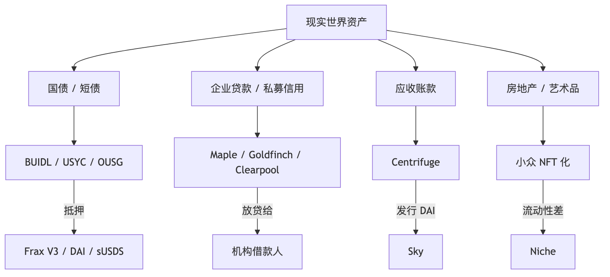
链上 KYC 与"无许可"哲学冲突。当前折衷：Centrifuge 用合规通道发币但 LP token 无许可流通；Maple 在合约层面设白名单地址；法律包装用 SPV/Trust 把链上代币挂钩现实资产。
预言机是 Ch14-17 借贷、Ch19-21 衍生品、Ch4-5 稳定币 CDP 的共同信任入口——也是 DeFi 历史上单类损失最大的攻击面（bZx, Cream, Mango 系列见 18.5）。三种主流模型按"谁推、谁付 gas、何时上链"区分。
Push：节点主动把价格推到链上聚合合约，消费合约直接 latestRoundData() 读 storage。Pull：节点把签名价格放链下，消费合约在需要时把签名带上链验证。
Chainlink Data Feeds 是经典 push：节点在偏离阈值（0.5%-1%）或 heartbeat（通常 1 小时）触发时写链上聚合合约。
优势：确定性节奏；调用简单（latestAnswer()）。劣势：高频场景延迟大；不必要的更新也要付 gas。
代码示例：
import {AggregatorV3Interface} from "@chainlink/interfaces/AggregatorV3Interface.sol";
contract Consumer {
AggregatorV3Interface immutable feed;
constructor(address _feed) { feed = AggregatorV3Interface(_feed); }
function getPrice() public view returns (int) {
(, int answer, , uint updatedAt, ) = feed.latestRoundData();
require(block.timestamp - updatedAt < 3600, "STALE"); // 心跳检查
return answer; // 通常是 8 位小数
}
}
Pyth 把价格存在 Pythnet（专用 Solana 分叉）上，消费者在需要时从 Wormhole 把签名 update 拉到目标链并支付 gas。
性能：Pyth 在 Pythnet 上每 400ms 推一次价；2024 年 3 月行情中观测到约 3.33 次/秒的有效更新。来源：RedStone 三家对比 2025。
适用：延迟敏感（永续 DEX、清算 bot）→ Pyth；确定节奏（借贷、稳定币监控）→ Chainlink（2024 年后推 Data Streams 弥补低延迟场景）。
RedStone 是 2025-2026 年快速增长的"模块化 oracle"。它在 110+ 链上同时提供 Push 和 Pull 两种模式，且 pull 模式 gas 比传统 oracle 少 70%+。Hyperliquid、Spark、Compound、Venus 等 protocol 都在用。
Kamino + Chainlink Data Streams 集成（2025）：Kamino Finance 引入 Chainlink Data Streams 做 sub-second 延迟价格喂价。来源：RedStone Push vs Pull、RedStone 主页。
TWAP（Time-Weighted Average Price）是抵御闪电贷价格操纵的廉价方案。Uniswap V2 的 priceCumulativeLast 在每次状态变化时累加 当前价格 × 时间增量，外部合约通过两次采样得到平均价。V3 改成几何平均，更抗操纵。
TWAP 局限：滞后——防操纵但不能实时反映市场价。
Cream Finance 2021-10（损失 $130M）：详见第 6.7 节。根因：yUSD share-price 可被外部 donation 操纵。
Mango Markets 2022-10（损失 $116M）： - Avi Eisenberg 用 $5M 在 Mango 开 MNGO 永续多单。 - 在 Mango 用作 oracle 的三家 CEX 上同时拉高 MNGO 现货价 1000%+。 - MNGO 永续盈利让他的"抵押品"价值飙升。 - 用这笔虚高抵押借走 $110M+。 - 根因：oracle 集中度太低（三家小盘 CEX）+ 标的资产流动性太低（容易拉盘）。
法律后续：Eisenberg 2024 年被陪审团裁定欺诈罪 + 市场操纵罪，但 2025 年法官以"Mango 没有用户协议、没有禁止操纵条款、没有还款要求"为由 Rule 29 撤销有罪判决。检方上诉中。来源：CFTC vs Eisenberg、TRM Labs Eisenberg 翻案。
bZx 2020-02 两次（合计 ~$954K，但是 DeFi 历史第一次大规模 oracle manipulation）： - 第一次：攻击者借 7,500 ETH 闪电贷，在 Kyber 上拉高 sUSD 价到 $2.5。bZx 用 Kyber 现货价做估值，借出更多 ETH。 - 第二次：3,518 ETH 在 Synthetix 直接买 sUSD（推高 Uniswap sUSD/ETH 价格 2x），把 sUSD 抵押到 bZx 借出 ~2,378 ETH 净利。 - 根因：用单个 DEX 现货价做 oracle。
来源：Immunefi Cream Analysis、CoinDesk bZx Flash Loan。
教训：用现货价做风控前先问"市场深度能撑多大操纵"；叠加 TWAP 或集中度阈值；高级方案：Chainlink + 多源 + secondary oracle（Aave V3 做法）。
永续 DEX 三大流派：① LP 池作为对手方（GMX/HLP，本章）——LP 集合承担 trader 的盈亏。② 链上订单簿（Hyperliquid/dYdX，Ch20）——把撮合搬进共识层，trader 互为对手方。③ 合成 + 通用 vault（Synthetix/Aevo/Lyra，Ch21）——用债务 vault 撮合多种衍生品。本章讲第一种。
LP 池作为对手方：LP 提供资产赚交易费 + funding；trader 从池子借流动性，付 fee + funding。trader 整体亏损时 LP 赚钱（长期事实，但需熬过短期对手方风险）。
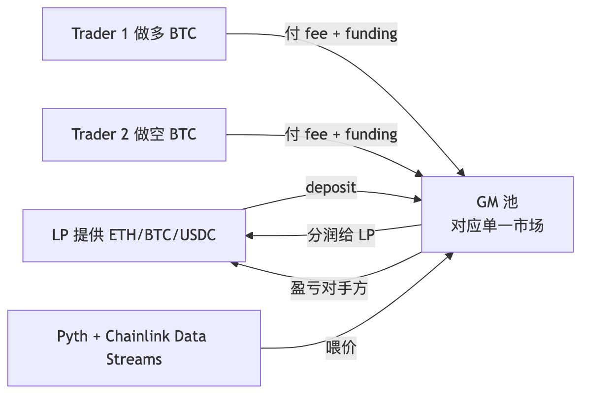
GLP（V1）：单一 multi-asset 共享池，长尾资产剧烈波动影响所有 LP（风险污染）。
GM（V2）：每市场独立 GM 池，每市场是 (index token, long collateral, short collateral) 三元组，如 BTC/USD 市场对应 BTC-USDC GM 池。
Synthetic GM 池（2025 推出）：
来源：GMX Single Token Pool BTC ETH、GMX V2 Quick Guide、GMX Review 2026。
GMX 推出 single-token GM pool——只用一种 volatile token（BTC 或 ETH）做双向抵押，没有 stablecoin。直觉：LP 不想持有 USDC（机会成本），就想纯持仓 BTC 赚 fee。代价是： - 自动 deleveraging（ADL）风险更高——市场不平衡时部分 trader 持仓被强制减仓。 - 初始交易上限较低，逐步放开。
还有 synthetic GM pool：用其它资产（如 USDC）做"假"抵押来支持其它代币（如 WIF/USD）的市场。例：WIF/USD [BTC-USDC] 池子用 BTC + USDC 抵押来 pricing WIF/USD perp，但 WIF 自身没在池子里。
来源：GMX Synthetics 仓库、Cyfrin GMX Funding。
GMX V2 funding rate 是动态的：
$$ \text{funding}_{\text{larger side}} = \text{factor} \cdot \frac{(\text{long OI} - \text{short OI})^{\text{exponent}}}{\text{total OI}} $$
或（dual-slope 动态调整版）：
$$ \Delta \text{rate} = \text{longShortImbalance} \cdot \text{fundingIncreaseFactorPerSecond} $$
long OI > short OI 时多头付 funding，反之亦然——越拥挤一侧 funding 越高，激励对面开仓平衡。
dual-slope 动态调整（V2 上线后引入）：funding rate 不是一次性根据当前 imbalance 算出，而是按秒迭代——每秒以 fundingIncreaseFactorPerSecond × imbalance 上调（imbalance 仍为同侧时），以 fundingDecreaseFactorPerSecond 回落（imbalance 反转时）。受 maxFundingFactorPerSecond 上限约束。优点：避免 imbalance 抖动 → funding 抖动；缺点：funding 反应有滞后，单边 OI 持续累积时仍可能压到上限并触发 ADL。参考 GMX synthetics MarketUtils.getFundingFactorPerSecond。
收入：开平仓 fee（5-10 bps）+ borrow fee + 清算残值。减去：trader 盈亏对手方（trader 赚 = LP 亏）+ 价格冲击 cost。
LP 净收益 = fee + funding - trader PnL。trader 整体亏损（长期大概率）时 LP 赚。
V1 时代，攻击者发现 GMX 用现货 oracle 给 perp 喂价，且不收 swap fee（针对 GLP 池）。方法： 1. 在某个 thin AVAX/USDC 池子拉价。 2. GLP 价被推高。 3. 攻击者以高价"swap"AVAX 进 GLP（GMX 用 oracle 价）。 4. 反向操作把价拉回，套利 ~$565K。
GMX V2 引入了 price impact + 收 swap fee 来防御此类攻击。
把 matching engine 做进共识层（而非智能合约）。HyperCore：自有 L1，HyperBFT 共识，bid/ask 存在状态机，价格-时间优先撮合，所有 perp 用 USDC 抵押。HyperEVM（2025-02 上线）：同一 L1 上的 EVM 兼容层，首例"原生 CLOB + EVM 双栈"。
来源：Hyperliquid Architecture、Hyperliquid HLP。
HIP-2（Hyperliquidity）：协议在订单簿上自动放置 maker order，无需信任外部做市商。
HIP-3 让 perp 市场列表完全无许可：stake 500,000 HYPE 作安全押金即可部署 perp 市场。
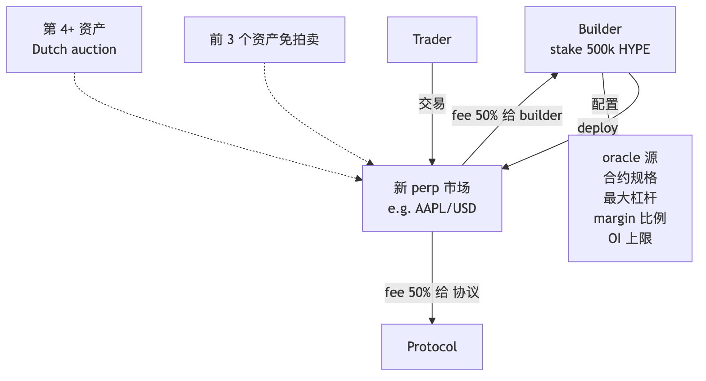
HIP-3 关键参数（来源：HIP-3 Docs、Phantom HIP-3）： - 押金：500k HYPE（既是 spam 防护也是 slashing 保证金） - 第一批 3 个资产免拍卖；第 4+ 走荷兰拍卖 - builder 选 oracle、合约规格、最大杠杆、margin 比例、OI 上限 - builder 拿 50% 交易费，协议拿 50%
2026 数据（来源：Hyperliquid Tokenized Futures $1.2B、FalconX HIP-3）： - 累计交易额 > $25B - 7.5 万+ 独立 trader 用 HIP-3 市场 - 2026-01 OI 一个月从 $260M 涨到 $790M - 品类爆发：商品类（白银 perp 单日峰值 ~$10亿）、股票（AAPL、TSLA）、油气、农产品
Hyperliquid HLP 是社区拥有的 vault。100% 社区拥有、0 协议费、所有交易费 100% 返还给 depositor。截至 2026Q1 的 OI ~$7.5B、日成交峰值 $10-15B——是 perp DEX 龙头。
假设你想在 Hyperliquid 部署 "AAPL/USD perp"（首例股票 perp），步骤：
风险：没有做市能力会"流动性死亡"，但 500k HYPE 已质押。实际要求 builder 自做市或邀请专业 MM（如 Wintermute）。
Cosmos appchain 路线：订单簿在共识层，~60 个 validator 共同维护，DYDX 做 staking + governance。优势：完全去中心化。劣势：matching 性能低于 Hyperliquid（HyperBFT 优化更激进）。
见第 20.6 节。2025 年新增 isolated margin 和 token incentive 模型改版。
核心设计：通用化抵押 vault——任何代币都能作为 margin 投入 perpetual 市场。
2025-Q4 重返主网：Synthetix V3 在 Optimism / Base 之外重新部署到以太坊主网，支持 sUSDe / cbBTC / wstETH 多种 margin。来源：Synthetix 多抵押。
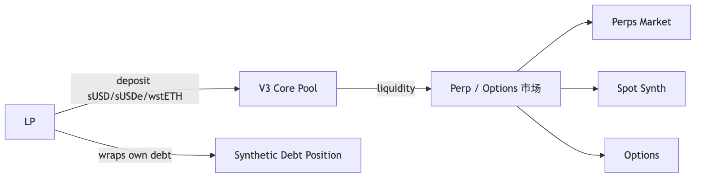
Aevo 是 OP Stack L2 上的"永续 + 期权综合所"。2026Q1 OI ~$15M、TVL ~$22M——已经过早期高峰。
链上期权 AMM：LP 提供 vault，用 Black-Scholes + 隐含波动率（IV）surface 做定价。每笔交易"挤压"surface——磁场效应：交易方向附近的 IV 被影响最大。来源：Lyra Volatility Surface。
Premia 用一个独立的 Volatility Surface oracle 把 IV surface 当 DeFi primitive 提供。基于 SVI / SSVI（Stochastic Volatility Inspired，Gatheral 2004）参数化波动率曲面。来源：Premia SSVI。
IV surface（Implied Volatility surface，隐含波动率曲面）：把"strike × maturity → 隐含波动率"画成 3D 曲面。strike 越偏离现货价 IV 越高（"波动率微笑/skew"），到期日越远 IV 越平。
IV 变化速度远超现货，LP 须实时调整 vega/gamma 敞口。链上期权 TVL 远小于永续，瓶颈是定价精度和资本效率。
ETH PoS 质押年化 2.5-3.5%，但本金锁定+退出队列长达数天。LST（Liquid Staking Token） 把质押权益代币化：用户存 ETH → 协议委托验证者 → 用户拿 LST（ERC-20）代表本金+持续累积的 staking yield。LST 把"锁定+生息"重新拆成"可自由转账+生息"——这是 Ch23 再质押、Ch25 Pendle PT/YT、Ch24 LRT 的物质前提。
| 协议 | 代币 | 计息方式 | TVL | 特色 |
|---|---|---|---|---|
| Lido | stETH / wstETH | rebase（每日重算余额） | ~$23B | 最大、流动性最深 |
| Rocket Pool | rETH | 汇率递增 | ~$2-3B | 去中心化，2700+ 节点运营商 |
| Coinbase | cbETH | 汇率递增 | ~$1B | 中心化但合规友好 |
| Frax | sfrxETH（双代币） | 汇率递增 | <$1B | sfrxETH 收益较高 |
| Mantle | mETH | 汇率递增 | ~$1B+ | 与 Mantle 链生态绑定 |
| StakeWise | osETH | 借鸡生蛋（用户自跑节点） | ~$300M | 抗 slashing 设计 |
数据来源：DefiLlama Lido、ETHFI vs Lido。
stETH：每天 rebase 更新所有持有者余额，1 stETH ≈ 1 ETH。
// stETH 简化（实际是 Lido StETH 合约）
function balanceOf(address account) external view returns (uint256) {
uint256 shares = _shares[account];
return shares * totalPooledEther / totalShares;
// totalPooledEther 每天因 staking yield 自增
// 所以同样 shares 对应的余额自动增长
}
问题：DeFi 合约假设余额不变——stETH 进 LP 池 rebase 收益会被池子吞掉，借贷协议无法正确累积利息。
wstETH（wrapped stETH）：余额不变，wstETH/stETH 汇率单向上升。
function getStETHByWstETH(uint256 wstETH) public view returns (uint256) {
return wstETH * stETH.totalPooledEther / stETH.totalShares;
}
结论：DeFi 合约永远用 wstETH，不用 stETH（Aave V3 e-mode 亦如此）。
2022-06 三箭暴雷，强制砸盘 stETH，Curve stETH/ETH 池跌到 0.94——流动性脱锚，而非基本面问题（底层 ETH 仍 1:1 兑换，只是赎回需等几天）。此后所有借贷协议给 stETH 设 LT 70-80%。
Rocket Pool 让任何人成为节点运营商（minipool），代价是协议复杂度高、TVL 增长慢。节点运营商除基础 staking 收益外还拿 RPL 奖励，需 stake 一定比例 RPL 作信用押金。
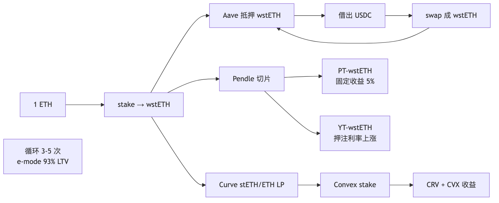
同一笔 ETH 同时用于 staking + 借贷杠杆 + 利率套利 + LP fee + emission。风险叠加：每多一层组合，单点故障传染面积翻倍（见 24.3 Kelp 事件）。
Restaking（再质押） = 把同一笔 ETH（或 LST）的安全性出租给多个 AVS（Actively Validated Service：DA 层、桥、appchain、AI co-processor、bridge oracle…），赚多份收益。代价是把"slashing surface"叠加——任一 AVS 触发 slashing condition 都会扣本金。本质是抵押品的"重复使用"：和 Ch22 LST 让 ETH 同时 stake+流通是同一思路的下一阶。
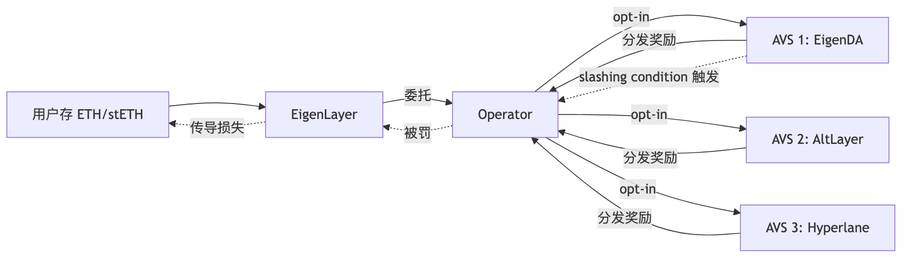
EigenLayer slashing 在 2025-04-17 上线（来源：EigenLayer Slashing Live）。
2026 数据（来源：EigenLayer $19.5B Empire）： - TVL ~$18-19.5B（峰值 $28.6B 后市场出清） - 39+ active AVS - 1900+ active operators - 市占率 ~93.9%（restaking 类）
关键改进：operator 可限制对单个 AVS 的暴露，stake 被 unique attribution 到特定 AVS。
2025-01 主网上线，定位 EigenLayer 的模块化竞争者。核心差异：Permissionless vault（无需 whitelist）；任意 ERC-20 抵押（USDC、BTC、各种 LRT 均可）；curator 管理 vault（Gauntlet 等专业风控公司）。
架构（来源：Understanding Symbiotic Vaults、LlamaRisk Symbiotic）：
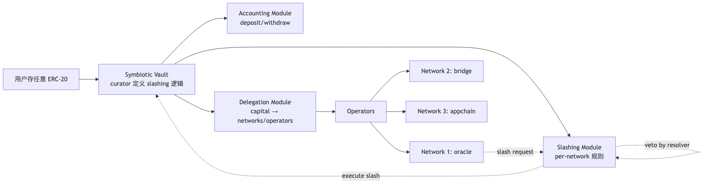
2026 状态：vault 数已 70+ 个，覆盖 oracle、DA、桥、appchain、Bitcoin-native services。Gauntlet 在 Symbiotic 上推出 "Restaking Vaults" 系列。
Karak 由 Andalusia Labs 开发，主张"任何资产都能 restake、任何网络都能受益"。Karak V2 Mainnet Phase 1 已上线（Karak V2 launch）。TVL（2024 末/2025 初）约 $740M，是 EigenLayer 之后第二大。
与 EigenLayer/Symbiotic 差异：Karak 把 restaking 抽象到 universal layer，自带 L2（Karak L2） 把 restaking 应用直接跑在自家 L2 上，简化开发体验。
Babylon 让 BTC 不离开比特币原链就能 stake。机制（来源：Babylon staking、Figment Babylon 101）：
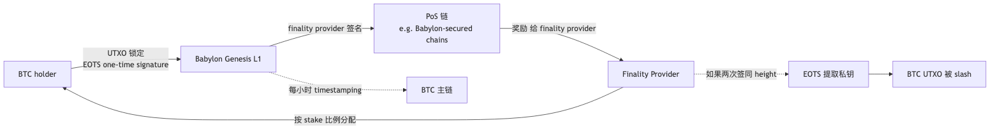
核心机制： - EOTS（Extractable One-Time Signature）：基于 Bitcoin Schnorr 签名构造的可提取一次性签名。如果一个 finality provider 在同一 height 签了两个不同 block，两个 Schnorr 签名能数学组合提取出 FP 的私钥——即 slashing。 - Bitcoin timestamping：Babylon 链每小时把状态 commit 到 Bitcoin 主链（防 long-range attack）。 - Dual-quorum：Babylon Genesis 上约 60 个 finality provider，stake BTC 提供 finality。
2026 状态：Babylon Genesis 主网运行中，TVL ~$5B，BTC LST 协议 Lombard（LBTC）等大量集成。
LST 之于 ETH staking，LRT 之于 EigenLayer/Symbiotic restaking——同样的"代币化复杂性"思路再走一阶。LRT（Liquid Restaking Token）：用户委托 ETH/stETH 给 LRT 协议 → 协议作为 operator 接管多个 AVS 的 slashing 风险 → AVS 奖励聚合后分给 LRT holder。
代价是用户买进 ezETH/eETH 时往往不知道协议挂了多少个 AVS、各自 slashing condition 是什么。这把 Ch23 的 slashing surface 进一步糊在了一起——一旦 LRT 被 Aave 等借贷协议接受作抵押（24.3 Kelp），单个 AVS 的故障就能传染到整个 DeFi 借贷栈。
来源：Restaking 2026 Guide、The Block LRT 总量、Best Liquid Restaking 2026。
| 协议 | 代币 | TVL | 特色 |
|---|---|---|---|
| ether.fi | eETH / weETH | ~$3.2B（一说 $7.8B 含 vault TVL） | LRT 龙头，weETH 是借贷接受度最高的 LRT |
| Renzo | ezETH | ~$1-2B | EigenLayer 重仓 |
| Kelp DAO | rsETH | $740M（2026Q1） | 多 LST 抵押，2026-04 桥事故 |
| Puffer | pufETH | ~$1.3B | "anti-slashing" 软件，Anchorage Digital 集成机构 mint |
| Swell | swETH / rswETH | ~$265M | 早期 LRT 之一 |
| Mantle | mETH（也是 LST） | ~$1B+ | Mantle 链生态 |
weETH 数据（来源：ETHFI Price Prediction 2026）： - weETH 链上市值 $5,666,653,038（2026-04-21） - LRT 类深度第一、被借贷协议接受度第一 - Optimism Superchain 集成（2026-02）
时间线： - 2026-04-18：Kelp DAO 跨链桥被攻击，攻击者铸造 ~$292M rsETH（实际无对应抵押）。 - 2026-04-19：攻击者用伪造 rsETH 在 Aave V3 抵押借走 wETH。Aave 出现 ~$196M 坏账集中在 rsETH/wETH 配对。Aave 紧急把 rsETH LT 调到 0、暂停 borrow。Aave TVL 单日跌 $6.6B、AAVE 代币跌 16%。 - 2026-04-20：Aave 发 rsETH Incident Report。LDO 代币跌 19%，因为市场担忧 stETH 也通过 LayerZero 接入跨链桥。 - 2026-04-22 至 23：Aave 召集 DeFi 同盟（Sky、ether.fi 等）讨论联合救援。Lido 治理提议拨 $5.8M stETH 帮 Kelp 弥补部分坏账（来源：Lido proposes 5.8M stETH）。
根因链路（来源：Blockaid LayerZero DVN Compromise）：
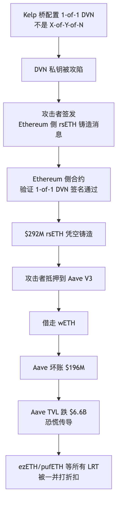
来源：LayerZero V2 Docs、LayerZero V2 Deep Dive。
LayerZero V2 把跨链消息分成三个独立角色： - Endpoint：消息入口/出口，每条链上一个不可变合约。 - DVN（Decentralized Verifier Network，去中心化验证者网络）：独立验证消息。 - Executor：在目标链上调用接收合约。
X-of-Y-of-N 安全模型：每个应用可以指定"必须 Y 个必选 DVN 都签 + N 个可选 DVN 中任 Z 个签"。例如典型配置 2 of 3 of 5：2 个必选 DVN 必须签 + 5 个可选 DVN 中任 3 个签。
Kelp 配置错误：1-of-1 DVN，单点被攻陷 → $292M 损失。此配置应在初始就被 LayerZero 和 Kelp 治理拒绝。
OFT 标准（Omnichain Fungible Token）：LayerZero V2 的代币跨链标准，2026 年支持 733+ omnichain 代币。
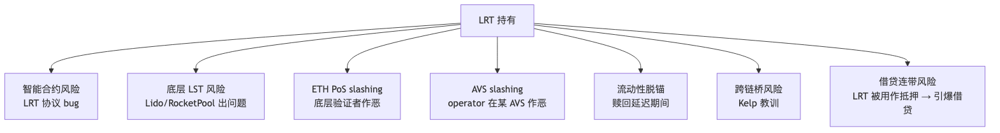
任何生息资产 $A$ 都可以分解为「未来某时点的本金」+「现在到那个时点之间的利息流」。Pendle 把这一分解写成两个独立 ERC-20——PT 和 YT——让本金和利息分别可交易。这等价于债券市场的 strip + zero-coupon——但比传统市场更激进，任何 ERC-4626 / yvUSD / aUSDC / stETH 都可以一键切片。
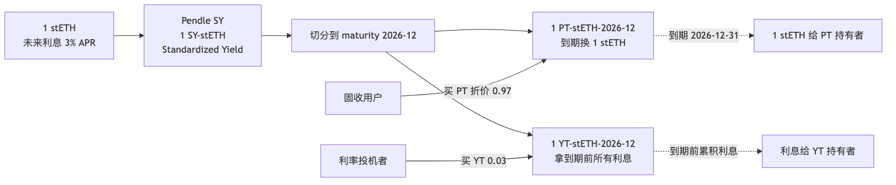
PT（Principal Token）：到期 1:1 兑回原始资产。买 PT 相当于买"零息债券"——当下折价买入、到期拿回本金。YT（Yield Token）：拿到 maturity 前的所有利息流。买 YT 押注未来利率上涨。
来源：Pendle AMM Docs、Pendle AMM A Closer Look、Pendle Mixbytes。
核心不变量：
$$ \text{SY_value} = \text{PT_value} + \text{YT_value} $$
任何时刻，1 SY 等于 1 PT + 1 YT（按价值，因为 PT/YT 是 1 SY 切出来的）。
Pendle AMM 用 log-normal 曲线 + 时间衰减： - PT 价格随到期日临近收敛到 1（从 0.97 → 0.98 → 0.99 → 1）。 - YT 价格随到期日临近衰减到 0（从 0.03 → 0.02 → 0.01 → 0）。
PY 索引机制（修正）：流传甚广的"SY 索引下降时 PT 索引冻结、由 YT 吃损失"是简化模型，实际更精确的描述是：Pendle V2 中 PT 在 maturity 收敛到 1 SY 的速率与 SY 实际利率脱钩——PT 价格由 AMM 上的 implied APY 决定，而非由 SY 实际累积利率直接驱动。SY 实际利率下行/为负时，PT 不会简单"冻结"，而是 implied APY 与 underlying APY 的偏离扩大。
LP 真正的 IL 来源正是 implied APY vs underlying APY 的偏离：当市场预期与实际利率背离，LP 在 PT/SY AMM 上的两边敞口被重新定价——类似 Uni V3 在区间外只剩单边资产，但驱动量是利率而非现货价。YT 持有者吃利率下行的损失是结果，不是机制本身。详见 Pendle AMM A Closer Look 与 Pendle Mixbytes 分析。
用户 A（固收）：买 PT-stETH-2026-12，0.95 stETH/PT，到期拿 1 stETH，8 个月折价收益 ~5.26%、折合年化 ~8%（高于 stETH 自身 3%）。用户 B（投机）：买 YT-stETH-2026-12，0.05 USDC/YT，未来 8 个月 stETH 实际收益 > 5% 时盈利——本质是杠杆做多利率。用户 C（LP）：提供 PT/SY 流动性，赚交易费 + 部分 YT 收益。
Berachain 在 2025-02 主网上线。它的 Proof of Liquidity 把流动性激励和 PoS 共识绑死：
BERA：gas + staking 代币（可转让）。BGT（Berachain Governance Token）：治理 + 收益代币（soulbound 不可转让）。
机制（来源：Berachain BGT Docs、Berachain Boost Validator、Berachain Reward Vaults）：
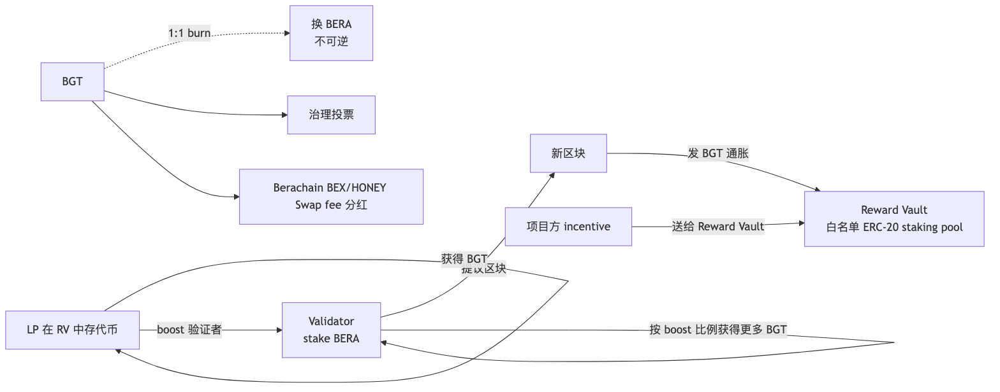
关键点： - BGT 不可转让，只能通过 Reward Vault 获得。 - BGT 持有者 boost 验证者增加其 block reward——这让"流动性提供"和"区块出块"绑死。 - BGT 1:1 burn 换 BERA（单向不可逆）。 - 验证者 commission ≤ 20%。 - Reward 在 3 天内线性分发给 LP。
2026 数据（来源：Berachain $3.2B TVL March 2026）： - TVL ~$3.2B（2026-03） - PoL v2（2025 末）：33% 协议激励自动转换成 wBERA 分给 BERA staker，给 gas token "real yield"。
来源：Top 10 Real Yield 2026、DeFi abandons Ponzi farms。
Real Yield：从真实业务（交易费、借贷利息、清算费）赚钱，通过 buyback/burn/staking 分给持有者。
Ponzi yield：靠新发代币支付 reward，价格涨 → APR 高 → 吸引新用户 → ...直到通胀跌穿。
辨真伪三问：① Yield 来源是 emission 还是 fee revenue？看 DefiLlama 的 "Revenue"（协议自留）而非 "Fees"（用户付出总成本）。② APR 多高？真实 yield 通常 2-15%，100%+ 几乎一定是 emission。③ 代币总供应是否在增？增意味着高 APR 是稀释购买力。
2026 趋势（来源：Real Yield 2026 Calibraint）： - 协议把"Revenue 分给 token holder 比例"从 2024 年 ~5% 提到 2026 年 ~15%。 - Uniswap fee switch 激活——开始 buyback + burn。 - Aave 治理改革，把 branded product revenue 直接路由给 DAO 和 token holder。
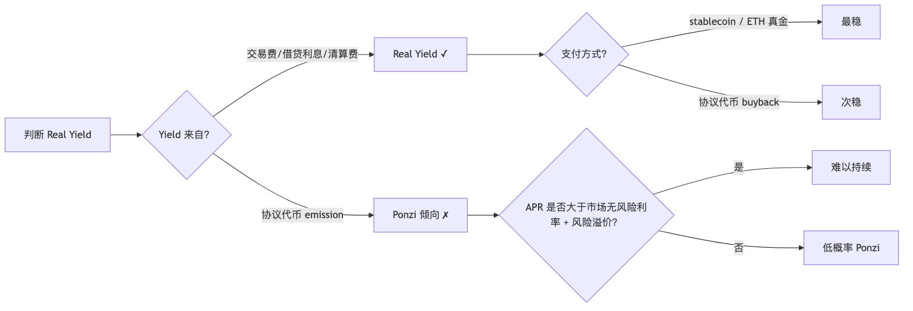
| 维度 | Pendle | Convex | Yearn V3 |
|---|---|---|---|
| 核心抽象 | PT/YT 利率切片 | veCRV 治理聚合 | ERC-4626 vault + curator |
| 收益来源 | 利率交易 + LP fee | Curve emission + bribes | 多 strategy 自动复投 |
| 用户操作 | 买 PT/YT/LP | 存 LP token 拿 cvxCRV | 一键存款 |
| 复杂度 | 高（需懂 PT/YT 数学） | 中 | 低 |
| 锁仓需求 | 14 天（sPENDLE） | 16 周（vlCVX） | 无 |
| 适用 | 利率投机 + 固收 | Curve 生态最大化 | "无脑"复利 |
三家在不同抽象层提供利率市场服务：Pendle 最锐利（直接交易未来利率），Convex 是治理聚合二次提取器，Yearn 是普通用户一键复利入口。
MEV（Maximal Extractable Value）：区块内交易的"排序、插入、删除"权限本身具有市场价值——builder/proposer 通过支配这种权限能提取额外利润。Daian 等 2019 年的 Flash Boys 2.0 把 MEV 从黑话推上学术议程：链上是有"前置交易+清算+套利"竞速场的，赢家拿区块内最佳座次的代价是付给 builder 的 priority bid。
每年估算 $5-10B 规模。本章把 MEV 拆成「五类机会」+「Flashbots/MEV-Boost/PBS 三层架构」+「sandwich 利润数学」，回答两个问题：MEV 怎么挣？协议怎么防？
1. Sandwich（三明治）：在受害交易前后各放一笔交易夹击 AMM 滑点。
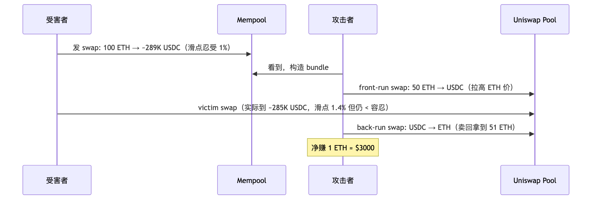
2. JIT LP：大额交易前一区块提供流动性、后一区块撤回，赚走绝大部分手续费，挤压 passive LP。
3. 清算 MEV：HF<1 时立刻发清算 tx，有益 MEV。
4. Cross-domain MEV：L1/L2 价格偏离时跨链套利。
5. Backrun 套利：大额 swap 后反向交易拉回价格，有益 MEV。
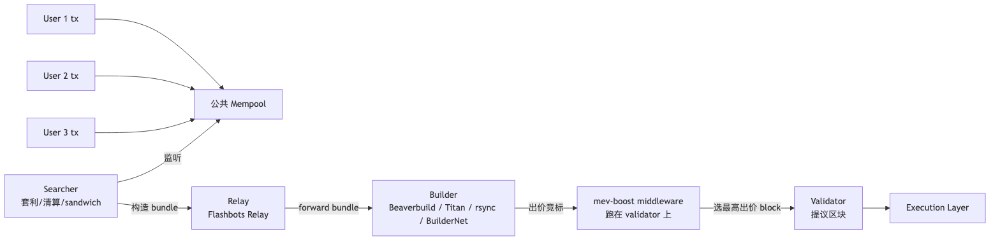
角色：Searcher（监听 mempool 找机会，构造 bundle）→ Builder（组装完整区块）→ Relay（中介验证出价）→ Validator（选最高出价 block）。PBS：出块权和打包权分离，builder 间出价竞争 MEV。MEV-Boost：PBS 的 PoS 实现。
2025-2026：90%+ 以太坊区块通过 MEV-Boost 构建，但前两大 builder（Beaverbuild、Titan）占 90%+ 区块。
2024-11：Flashbots + Beaverbuild + Nethermind 联合运营 BuilderNet——去中心化 builder 网络，跑在 TEE（Trusted Execution Environment）里共享 MEV、抵御中心化。
2024-12：Flashbots 把所有 builder、orderflow、refunds 迁到 BuilderNet，关掉中心化 builder。这是 MEV 历史上的关键转折。来源：BuilderNet Flashbots。
2025-02 v1.2：streamline operator onboarding，让更多团队加入 BuilderNet。
SUAVE（Single Unifying Auction for Value Expression）：Flashbots 下一代——builder 角色去中心化，跨多 domain 做统一 MEV-aware 隐私 mempool。订单加密发送，多个 builder 在 TEE 里竞标，执行时才解密（encrypted mempool 抵御 sandwich）。SUAVE Centauri 已发布，MEVM 为核心组件。
ePBS（EIP-7732）：把 PBS 从 Flashbots relay 内化进协议，减少信任假设。
MEV-Burn：要求 builder 烧掉一部分出价，把 MEV 利润转给协议本身制造通缩，让 MEV 收益和出块解耦，避免 validator 集中审查风险。归在 Ethereum 路线图 "The Scourge" 阶段。来源：Ethereum PBS、MEV burn—a simple design。
设 victim 要 swap $\Delta x$ token0 进 V2 池 (X, Y)，滑点容忍 $\epsilon$。攻击者前置 swap $\Delta x_a$ token0：
第 1 步（attack front-run）：池变为 $(X + \Delta x_a, Y - \Delta y_a)$，其中 $\Delta y_a = \frac{0.997 \Delta x_a Y}{X + 0.997 \Delta x_a}$。
第 2 步（victim 受影响 swap）：池变为 $(X + \Delta x_a + \Delta x, Y - \Delta y_a - \Delta y_v)$。
第 3 步（attack back-run）：用 $\Delta y_a$ token1 swap 回 token0，得 $\Delta x_a'$。
攻击者利润 = $\Delta x_a' - \Delta x_a - 2 \cdot \text{gas} - \text{builder tip}$。
临界点：当 victim swap 太小或滑点容忍太严时，front-run 后 victim tx revert（slippage 超出容忍）→ attack 失败、白付 gas。所以攻击者需要精确建模 victim 滑点容忍。
Solana 的 MEV 生态以 Jito 为代表。Jito 提供 block engine（类似 Flashbots）+ JTO 代币 staking + MEV 分润。Jito 模式与以太坊 MEV-Boost 类似但更"中心化"——Solana 出块速度太快（400ms）让 PBS 复杂度更高。
async def main():
async for pending_tx in ws_mempool():
state = simulate_on_fork(pending_tx)
opportunity = find_arbitrage(state) or find_liquidation(state)
if not opportunity: continue
bundle = build_bundle(pending_tx, opportunity.tx)
result = flashbots.send_bundle(bundle, target_block=current_block + 1)
log_metrics(result)
教学版 sandwich sim 在 code/sandwich-sim/，仅用于研究。生产 sandwich 是极内卷红海，多数辖区有合规风险。
本章两条主线：① 账户抽象——把"账户=私钥签名的 EOA"放宽为"账户=任意智能合约"，让 batch / 社交恢复 / paymaster 成为可能（4337 + 7702 + Permit2）。② 意图——把"用户必须指定 DEX/路径/滑点"放宽为"用户只声明结果约束，solver 网络竞标实现"（CowSwap / UniswapX / OIF）。两者都在做同一件事：把 UX 工程化的责任从用户端转移到协议端 + solver 市场。
AA（Account Abstraction）：让账户可以是任意智能合约，而非只能由私钥签名的 EOA。ERC-4337 把 AA 做在共识层之外（不改 protocol，纯应用层）：
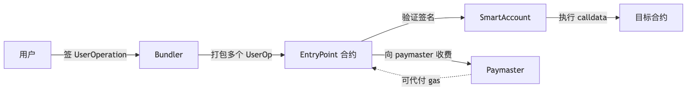
好处：社交恢复、batch 交易、第三方代付 gas、session key。代价：首次部署 SmartAccount 一次性 gas 几十美元。
Pectra 升级（2025-05-07）带来的 EIP-7702 是另一条路：让现有 EOA 通过签名"临时附加"smart contract 代码。
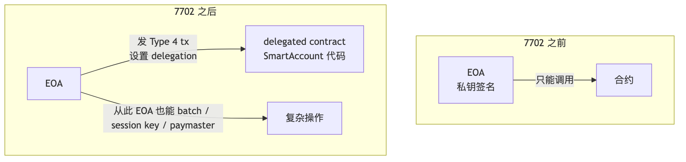
用户不需要部署新账户、不需要迁移资产。Circle 用 EIP-7702 + Paymaster 实现"用 USDC 付 gas"——用户从创建 EOA 那一刻起就能 gasless 交易。来源：Circle EIP-7702 Paymaster、Alchemy EIP-7702。
EIP-7702 补充 ERC-4337：4337 解决原生 smart wallet 体验，7702 解决存量 EOA 升级，两者结合让 batch + gasless + social recovery 成为默认。
| 标准 | 适用 | 工作方式 |
|---|---|---|
| ERC-2612 | 实现了它的 ERC-20 | 代币合约自带 permit()，EIP-712 签名授权 spender 后 transferFrom |
| Permit2 | 任意 ERC-20（含无 ERC-2612 的 USDT/WETH） | 一次性 approve(Permit2, MAX)，之后签消息给 dApp 短期 allowance，支持 batch + 过期 |
USDT、WETH、老 USDC 都没实现 ERC-2612，Permit2 提供统一签名层兼容所有 ERC-20。
ERC-2612 示例：
DAI.permit(owner, spender, value, deadline, v, r, s);
DAI.transferFrom(owner, spender, value);
Permit2 示例（USDC 没有 ERC-2612 也能用）：
USDC.approve(PERMIT2, type(uint).max); // 一次性
PermitSingle memory permit = PermitSingle({
details: PermitDetails({
token: USDC,
amount: 100e6,
expiration: block.timestamp + 1 hours,
nonce: 0
}),
spender: address(uniswapRouter),
sigDeadline: block.timestamp + 1 hours
});
permit2.permit(owner, permit, signature);
来源：Uniswap Permit2 GitHub、ERC-2612 EIP。
最佳实践：自家代币用 ERC-2612；第三方代币用 Permit2；intent 系统天然依赖 Permit2 nonce + 过期机制。
传统 swap：用户必须指定 DEX、fee tier、滑点、deadline，错一步被 sandwich。Intent：只签声明 { sell: 1000 USDC, buy: ETH (>= 0.32), deadline: 2026-04-28 12:00 }，Solver/Filler 网络找最优路径并保证执行价不差于下限。
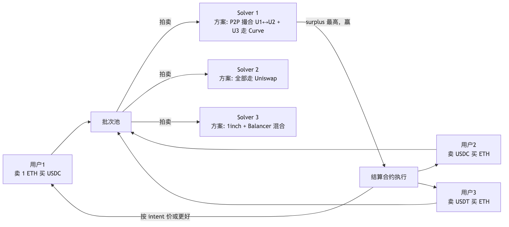
solver 经济学（来源：CowSwap Solver Docs、CowSwap Rewards、CowSwap Auction Mechanism）： - Score 用于排名和 reward = surplus + protocol fee（统一记分单位）。 - Surplus 全归用户：solver 找到比 limit price 更好的执行价，差额给用户而非协议。 - Solver 周期奖励：每周二 CowSwap 协议用 COW 代币奖励 solver。 - Solver 担风险：solver 出价时承诺执行价，如果实际执行差于承诺要补差。
CoW AMM：CowSwap 自家 zero-swap-fee AMM，专给 solver 对冲库存，首例 solver-friendly AMM。
authorization_list 可以被任何人 replay 提交吗？怎么防？前 27 章把每个机制单独讲透，这一章是回放——把同一组事故从攻击面分类、根因链、五大铁律三个角度重看。每个 postmortem 都至少绑到前文某章的一个不变量假设破裂。
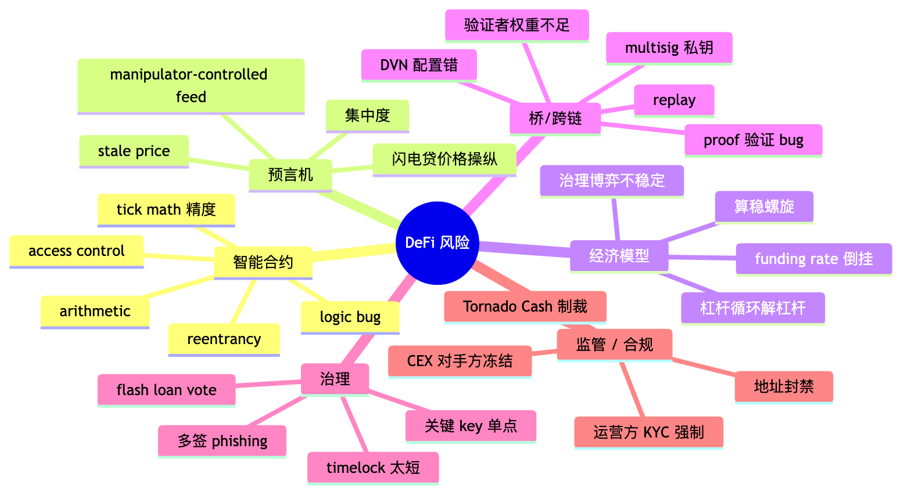
| # | 时间 | 协议 | 损失 | 类别 | 根因 |
|---|---|---|---|---|---|
| 1 | 2022-03 | Ronin | $625M | bridge | 5/9 multisig 被钓鱼（Sky Mavis 4 个 + Axie DAO 1 个） |
| 2 | 2022-05 | Terra/UST | $400亿+ | 经济模型 | 算稳死亡螺旋 |
| 3 | 2022-02 | Wormhole | $326M | bridge | Solana 端 sysvar 验证 bug |
| 4 | 2026-04 | Kelp DAO | $292M | bridge | LayerZero 1-of-1 DVN 单点被攻陷 |
| 5 | 2024-04 | Drift | $285M | 内部权限 | privileged access 被滥用（疑似 DPRK） |
| 6 | 2023-03 | Euler V1 | $197M | 智能合约 | donateToReserves 没做健康检查 |
| 7 | 2022-08 | Nomad | $190M | bridge | trusted root 默认 0x00 = untrusted |
| 8 | 2022-04 | Beanstalk | $182M | 治理 | 闪电贷治理代币通过恶意提案 |
| 9 | 2021-10 | Cream | $130M | 预言机 | yUSD share-price 可被外部 donation 操纵 |
| 10 | 2023-07 | Multichain | $130M | 中心化运营 | CEO 在中国被带走，单点私钥失控 |
| 11 | 2022-10 | Mango | $116M | 预言机 | 三家小盘 CEX 现货价被同时拉高 |
| 12 | 2023-11 | HTX/Heco | $100M | 内部权限 | 操作员账户私钥泄露 |
其它重要事故： - 2024-10 Radiant Capital $50M：DPRK 钓鱼 PDF + 硬件钱包前端被篡改 - 2024-03 Munchables $62M：内鬼，开发者团队是同一朝鲜人 - 2024-01 Orbit Bridge $81.5M：CISO 离职前修改防火墙策略 - 2024-09 Penpie $27M：reentrancy + 跨协议假设破裂 - 2023-11 KyberSwap $47M：tick 边界精度灾难 - 2023-07 Curve $73M：Vyper 编译器 bug - 2020-02 bZx 两次 ~$954K：DeFi 历史上第一次大规模 oracle manipulation
机制根因：UST 跌 → 套利者用 1 UST 换价值 $1 的 LUNA → 铸出的 LUNA 立刻被卖 → LUNA 价格跌 → 每 UST 换更多 LUNA → LUNA 供应爆炸——死亡螺旋。
时间线（来源：Anatomy of a Run 哈佛、Terra-Luna ScienceDirect）： - 2022-05-07：两大地址从 Anchor 提走 $375M UST。Curve 3pool 出现 UST/3CRV 卖压。UST 跌到 ~$0.972。 - 2022-05-09 至 10：LFG 卖 BTC 和 ~$480M USDT 护盘，无效。 - 2022-05-10 至 13：UST 跌到 $0.30、$0.10、$0.01。LUNA 从 $80 跌到 $0.0001。 - 2022-05-16：UST/LUNA 基本归零。LUNA 总供应从 7.25 亿炸到 70 亿。
Do Kwon 后续：2024-2025 在美国受审，因 $40B 崩盘被判 15 年。教训见第 5.5 节。
攻击链：
1. Euler 引入 donateToReserves 函数（修复一个更小的"first depositor" bug）。
2. 这个函数没做"健康检查"——你 donate 后不需要保证账户 HF 仍 > 1。
3. 攻击者闪电贷 30M DAI，10x 杠杆借出 100M eDAI。
4. 调用 donateToReserves(100M eDAI)——账户突然变"deeply insolvent"。
5. 用第二账户调 liquidate(攻击者第一账户)，触发激进 liquidation discount，第二账户拿走清算折扣对应资产。
6. 重复多次抽走 ~$197M（DAI、WBTC、stETH、USDC）。
结局：攻击者最终归还 ~$240M（多于偷的——团队在其 OpSec 失误中找到对话路径）。来源：Euler Recovery Postmortem、Chainalysis Euler Analysis。
详见第 14.4 节（Aave 视角）和第 24.3 节（LRT + LayerZero DVN 完整复盘）。核心教训：单 DVN 配置是单点故障；借贷协议接受跨链资产抵押必须审计桥安全模型。
Sky Mavis 控制 9 个 validator 中的 4 个，加 Axie DAO 1 个 = 5/9 阈值。攻击者：① LinkedIn 假招聘 PDF 钓鱼，拿到 Sky Mavis 4 个 validator 私钥；② 发现 2021-12 未撤销的"gas-free"白名单 backdoor，自动签到 Axie DAO 第 5 个；③ 单次提走 173,600 ETH + 25.5M USDC = ~$625M，6 天后才被发现（一用户提 5,000 ETH 失败）。
来源：CoinDesk Ronin Hack、Coinbase Ronin Analysis。
结局：Sky Mavis 从 Binance 募 $150M 赔偿，Ronin 三次审计后 2022-06 重开。教训：多签不够分散，过期配置必须及时清理。
攻击链：① Wormhole 用 deprecated load_instruction_at 从 sysvar 读 Secp256k1 验证结果，此函数不验证 sysvar 账户真实性；② 攻击者制造 fake sysvar account（预填"已验证"字节序列）；③ verify_signatures 信了 fake sysvar；④ 铸造 120,000 wETH（~$326M）桥回 Ethereum 抽走真 ETH。
来源：Halborn Wormhole、Chainalysis Wormhole。
结局：Jump Crypto 自掏 $326M 补损，2023-02 counter-exploit 找回 ~$140M。教训：deprecated API 是攻击面；"系统级"信任入口必须严格验证账户身份。
路由升级里把 trusted root 设为 0x00，而 0x00 是 untrusted root 的默认值——所有消息自动被当成"已验证"。
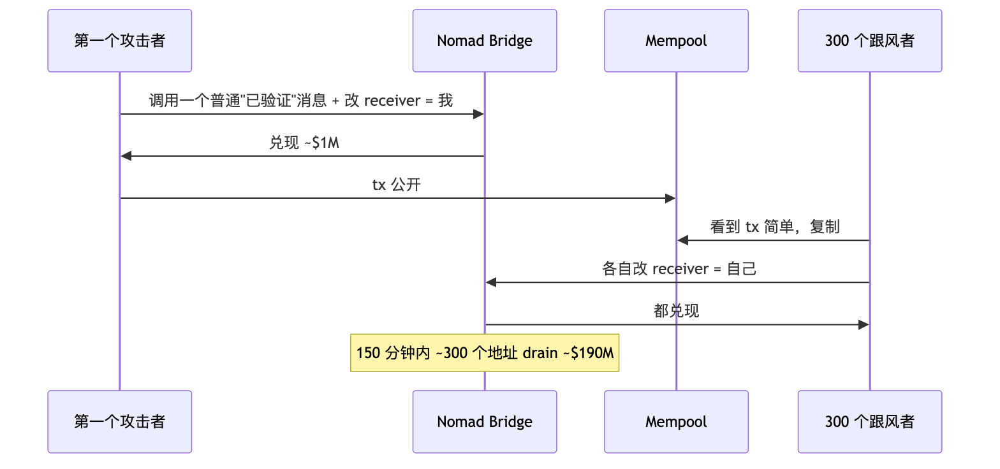
来源：Halborn Nomad、Mandiant Nomad。~$37M 被白帽归还。教训：默认值是攻击面，未初始化 root 不能等于零值。
详见第 9.5 节。教训：协议安全不只取决于自家代码，编译器/运行时/外部调用约定都是攻击面。
Penpie 在 Pendle 之上做收益聚合。攻击链：
1. 攻击者创建一个伪造的 Pendle Market（用伪造的 SY Token）。
2. 攻击者从 Balancer 借 agETH / rswETH / egETH / wstETH 闪电贷。
3. 攻击者把闪电贷资产存入伪造的 SY 合约。
4. 调用 Penpie 的 harvest 时，伪造 SY 在 callback 里 reentrancy 进入 Penpie 自己——奖励账本被反复更新。
5. 攻击者把虚假 reward 兑现，掏空 $27M。
根因：Penpie 信任了 Pendle 上所有市场，未验证是否来自治理白名单——跨协议假设破裂。来源：Three Sigma Penpie。
Radiant Capital 在 Arbitrum 是大借贷协议。2024-10-16 损失 $50M。
攻击链：① 假冒"前合约工"Telegram PDF 钓鱼，感染开发者 macOS；② 恶意软件篡改硬件钱包前端显示——签名时屏幕显示正常 tx，实际签恶意 tx；③ 三个多签 signer 被同样钓鱼；④ 攻击者控制 transferFrom 权限，掏空用户授权资产。
归因：Mandiant 归因 UNC4736（DPRK APT）。教训：① 主机被感染时硬件钱包屏幕可被篡改；② 多签 + 地理分布仍可被同一波 APT 破；③ air-gapped 离线设备 + 二次设备验证是更高级别防御。
来源：Halborn Radiant、OneKey Radiant 详解。
闪电贷借大量治理代币 → 通过"金库转给攻击者"的提案 → 还贷。根因：无 timelock，治理权重按当下持币而非 ve 锁仓计算。教训：必须用 timelock + 长期锁仓权重过滤闪电贷攻击。
详见第 7.7 节。tick 边界舍入方向错，TVL 从 $71M → $3M。
详见第 18.5 节。闪电贷在单个 DEX 拉高 sUSD 现货价，高估值抵押借 ETH——DeFi 历史首次大规模 oracle manipulation via flash loan。
详见第 18.5 节。$5M 同时在三家小盘 CEX 拉高 MNGO 1000%+，借走 $110M+。法律：2024 有罪判决被 2025 Rule 29 撤销，检方上诉中。
2023-05-21 CEO Zhaojun 被带走，电脑/手机/硬件钱包/助记词全被没收。2023-07-07 异常转账 ~$125M，2023-07-13 其妹妹也被带走（曾尝试转移 ~$220M），2023-07-14 永久关闭。
根因：私钥控制权高度集中在 CEO 单人——事实上的中心化跨链桥。来源：Bloomberg Multichain。
Blast 链 GameFi，开发团队 4 人都是同一朝鲜人，其中一个把自己余额改成 1,000,000 ETH 取出。ZachXBT 公开追踪 + 社区压力后攻击者归还全部 $62.5M。来源：Halborn Munchables。
铁律 1：所有外部输入都是攻击面——oracle、跨链消息、参数、ERC-20 余额、编译器输出 bytecode。工具链可能有 0day（Curve 2023-07）。
铁律 2：默认值必须安全——未初始化的 root 等于零值是灾难（Nomad）。设计 invariant 时问"传 0 / 空数组 / 默认地址会怎样？"。
铁律 3：跨协议假设必须显式验证——永远不要假设你交互的合约符合你预期的不变量（Penpie：Pendle 允许无许可创建市场）。
铁律 4：私钥即权力——Ronin/Multichain/Radiant/Orbit/HTX 5 个事件都是私钥被攻陷。air-gapped 离线设备 + 二次设备验证是最高级别防御。
铁律 5：经济模型大于代码——UST/Beanstalk/Mango 都是代码按设计运行但经济假设破裂。永远问"极端行情下这个机制还能维持吗？"。
Mempool 监控与 MEV 检测：实时分析 pending tx 的攻击意图，识别 sandwich、清算先发、合约异常调用。Blocknative、bloXroute、EigenPhi 等服务背后有 ML pipeline。
风险参数优化（Gauntlet / Chaos Labs）：跑数十万条 agent-based simulation（历史价格 + 合成行情），看不同参数下的最大坏账概率，输出 LT/LB/borrow cap 推荐。Chaos Labs 更进一步，Risk Oracle 把 ML 推荐参数实时上链。
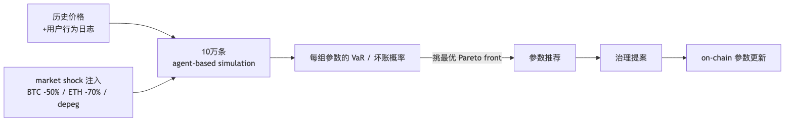
清算风险打分：给定借款人的 HF、抵押组合、历史行为（被清算次数、还款及时性、地址年龄），ML 估计未来 24/72 小时被清算的概率。清算 bot 用此排序优先级。
Intent solver 的优化求解：CowSwap / UniswapX 的 solver 在路由空间里做组合优化。复杂的 solver 用 RL（reinforcement learning）或 MILP（mixed-integer linear programming）求解多池路由 + gas + 滑点的全局最优。
LLM in intent：2025-2026 新兴方向——把自然语言意图（"把我的 ETH 换成最稳的高息组合"）翻译成结构化 intent。Anoma、aori 在做。
反欺诈与黑名单：链上行为聚类找出洗币地址、识别钓鱼合约。Chainalysis、TRM Labs、Elliptic 的核心引擎都是 ML。Drift 2024-04 hack 后 Elliptic 在几小时内归因到 DPRK，靠的是地址 cluster 历史行为模式。
工程师姿态：AI 是放大判断的工具，不是替你判断的黑盒。
A. 协议关停/跑路 -- 对策：看治理代币持有分布、多签 signer 身份、是否有 emergency shutdown（参考 28.4.11 Multichain）。
B. 审计/风控利益冲突 -- Gauntlet 同时是 Aave 风控方和治理持币方。对策：交叉对照多家审计（OpenZeppelin / Trail of Bits / Spearbit / Zellic / Cyfrin）。
C. 监管转向 -- Tornado Cash 制裁、SEC vs Uniswap Wells Notice、GENIUS Act / STABLE Act。对策：协议设计时考虑"最坏情况下能否 pause / 迁移 / 分叉"。
协议一手文档见各章节"来源"链接。
事故复盘（必读）： - rekt.news 时间线 - ChainSec DeFi Hacks - Halborn 事故复盘系列 - Trail of Bits / OpenZeppelin / SlowMist 审计报告
学术 / 研究： - DeFi MOOC (Berkeley) - Paradigm Research - Flashbots Writings - [Gauntlet / Chaos Labs Research]
数据 / 仪表盘： - DefiLlama - Token Terminal - Artemis - Dune Analytics（自定义查询）
读完 28 章后的能力基线（也是面试 / 自我评估的最低线）： 1. 逆向阅读：拿到任意 DeFi 合约，1 小时内画出它在四层结构中的位置、核心不变量、外部依赖、清算路径。 2. 本地复现：fork mainnet 跑通 V2 swap、V3 mint、Aave 清算、ERC-4626 deposit、UserOp 提交。 3. 事故归因：任选 rekt.news 一桩 $50M+ 事件，用前文章节交叉引用画出根因链。 4. 研究跟进：能读懂 Paradigm / Flashbots / Gauntlet / Chaos Labs 博客而无需查 90% 术语。
四条工程心法（贯穿全书）： - 上层只能比下层更脆弱——下层假设破裂会一路向上传导。 - 假设没写在代码里就一定会被攻击——把不变量写成 invariant test。 - 源码不撒谎，TVL 经常撒谎——优先读 storage layout 和 modifier。 - 真实价值看 fee revenue / share，不看 emission APR——后者是稀释购买力的会计幻觉。
下一步：模块 07（L2 与扩容）理解 DeFi 的物理基础设施；模块 08（ZK）理解隐私 DeFi 的下一代语言；模块 05（合约安全）从攻击者视角再读一遍这 28 章。
DeFi 主流协议按层 + 子类完整列出，附 TVL（2026-04 来源 DefiLlama）、链、正文章节交叉引用。
| 代币 | 发行方 | 储备 | 市值 | 交叉 |
|---|---|---|---|---|
| USDT | Tether | 现金+短债 | ~$140B | Ch3 |
| USDC | Circle | 现金+短债（BlackRock 托管） | ~$60B | Ch3 |
| FDUSD | First Digital | 现金+国债 | ~$3B | Ch3 |
| PYUSD | PayPal+Paxos | 现金+国债 | ~$1.5B | Ch3 |
| RLUSD | Ripple | 现金+国债（NYDFS 监管） | ~$1B | Ch3 |
| TUSD | TrustToken | 现金+国债 | ~$500M | Ch3 |
| USDP | Paxos | 现金+国债 | ~$200M | Ch3 |
| USD0 | Usual | RWA 国债 + USYC | ~$1.5B | 第 5 章变体 |
| 代币 | 协议 | 抵押 | 市值 | 交叉 |
|---|---|---|---|---|
| USDS / DAI | Sky Protocol | ETH/wstETH/RWA/USDC（PSM） | ~$9B | Ch4 |
| LUSD / BOLD | Liquity V1/V2 | ETH（V1）/wstETH/rETH（V2） | ~$300M | Ch4 |
| GHO | Aave | Aave 抵押品 | ~$300M | Ch4 |
| crvUSD | Curve | wstETH/sfrxETH/WBTC（LLAMMA bands） | ~$200M | Ch4/9 |
| eUSD | Lybra | stETH/wstETH | ~$50M | Ch4 |
| 代币 | 协议 | 模型 | 市值 | 交叉 |
|---|---|---|---|---|
| USDe / sUSDe | Ethena | delta-neutral 现货+永续空头 | ~$6B | Ch5 |
| iUSDe | Ethena | 机构合规版 USDe | 增长中 | Ch5 |
| frxUSD / sfrxUSD | Frax V3 | RWA（BUIDL）+ AMO | ~$1B | Ch5 |
| USDM | Mountain | 100% 短期国债 + rebase | ~$300M | Ch5 |
| USDY / OUSG | Ondo | 短期国债 / 机构国债 | ~$700M | Ch5 |
| USYC | Hashnote | 机构国债 | ~$1B | Ch5 |
| BUIDL | BlackRock | tokenized money-market | ~$3B | Ch5 |
| syrupUSDC | Maple | 私募信用收益 | ~$200M | Ch17 |
| 代币 | 协议 | 模式 | TVL | 交叉 |
|---|---|---|---|---|
| stETH / wstETH | Lido | rebase / wrap | ~$23B | Ch22 |
| rETH | Rocket Pool | 汇率递增 | ~$2-3B | Ch22 |
| cbETH | Coinbase | 汇率递增 | ~$1B | Ch22 |
| sfrxETH | Frax | 双代币 | <$1B | Ch22 |
| mETH | Mantle | 汇率递增 | ~$1B+ | Ch22 |
| osETH | StakeWise | 用户跑节点 | ~$300M | Ch22 |
| 代币 | 协议 | TVL | 状态 | 交叉 |
|---|---|---|---|---|
| eETH / weETH | ether.fi | ~$3.2B | 龙头 | Ch24 |
| ezETH | Renzo | ~$1-2B | EigenLayer 重仓 | Ch24 |
| pufETH | Puffer | ~$1.3B | Anchorage 集成机构 | Ch24 |
| rsETH | Kelp DAO | $740M | 2026-04 桥被攻击 | Ch24 |
| swETH / rswETH | Swell | ~$265M | 早期 LRT | Ch24 |
| 代币 | 模式 | 信任 | TVL | 交叉 |
|---|---|---|---|---|
| WBTC | BitGo 托管 | 中心化 | ~$10B | Ch2 |
| cbBTC | Coinbase 托管 | 中心化 | ~$3B | Ch2 |
| tBTC | threshold ECDSA 51 节点 | 多签 | ~$500M | Ch2 |
| FBTC | Antalpha+Mantle | 托管 | ~$1B | Ch2 |
| LBTC | Lombard + Babylon | restaked BTC | ~$1.5B | Ch2/23 |
| uniBTC | Bedrock + Babylon | restaked BTC | ~$300M | Ch23 |
| solvBTC | Solv | 多托管 | ~$700M | Ch2 |
| DEX | 模型 | 主链 | TVL | 交叉 |
|---|---|---|---|---|
| Uniswap V4 | singleton + hooks | Eth/Base/Arb/多链 | ~$5B | Ch8 |
| Uniswap V3 | 集中流动性 NFT | Eth + 多链 | ~$3B | Ch7 |
| Uniswap V2 | xy=k | Eth + 多链 | ~$1B | Ch6 |
| Curve | StableSwap + crvUSD | Eth + 多链 | ~$2B | Ch9 |
| Balancer V3 | 加权池 + hooks | Eth + 多链 | ~$1B | Ch10 |
| PancakeSwap Infinity | V2/V3/V4 hybrid | BNB + 多链 | ~$1B | Ch10 |
| Aerodrome | ve(3,3) | Base | ~$1.5B | Ch11 |
| Velodrome | ve(3,3) | Optimism | ~$300M | Ch11 |
| Maverick V2 | directional liquidity | Eth/Arb/Base | ~$200M | Ch10 |
| Trader Joe LB | bin 离散流动性 | Avalanche/Arb/BNB | ~$200M | Ch10 |
| Camelot | V2 fork + V3 nitro | Arbitrum | ~$100M | A.2 |
| Ramses | Solidly fork | Arbitrum | ~$50M | A.2 |
| Bunni v2 | Uniswap V4 hook | Eth | ~$500M | Ch8/11 |
| Angstrom | V4 hook + ASS MEV 防御 | Eth | 增长中 | Ch8 |
| DEX | 模型 | TVL | 交叉 |
|---|---|---|---|
| Jupiter | DEX 聚合器 + JLP perp | ~$2B+ | A.2 |
| Orca | Whirlpools 集中流动性 | ~$300M | A.2 |
| Phoenix | 极简订单簿 | ~$50M | A.2 |
| Drift | vAMM + JIT + 订单簿 | $250M（hack 后） | Ch20 |
| Raydium | V3 + 增长中 | ~$1B | A.2 |
| 协议 | 模型 | 交叉 |
|---|---|---|
| CowSwap | 批量拍卖 + solver 竞争 | Ch27 |
| UniswapX | filler 网络 | Ch27 |
| 1inch Fusion | 1inch intent 模式 | Ch27 |
| Bebop | RFQ + intent | Ch27 |
| Anoma | intent-centric L1 | Ch27 |
| Khalani | 跨链 intent solver | Ch27 |
| 协议 | 模式 | TVL | 交叉 |
|---|---|---|---|
| Aave V3 + Umbrella | 共享池 + 自动 slash | ~$26B（4 月跌至 $20B） | Ch14 |
| Spark / SparkLend | Aave V3 fork（Sky） | ~$3.25B + $5.24B liquidity layer | Ch4/17 |
| Compound III (Comet) | 单一基础资产 | ~$3B | Ch15 |
| Morpho Blue + MetaMorpho | 隔离市场 + curator | ~$5B | Ch16 |
| Euler V2 | Euler Vault Kit | ~$1B | Ch16 |
| Silo V2 | 风险隔离 silo | ~$558M（Sonic） | Ch16 |
| Ajna | 无 oracle | <$50M | Ch16 |
| Venus | BNB Chain 龙头 | ~$1.5B | A.3 |
| Radiant | Arbitrum（重建中） | <$100M | Ch28 |
| Kamino Lend | Solana | ~$3.2B | A.3/17 |
| Save Finance（前 Solend） | Solana | ~$300M | A.3 |
| Maple | 链上信用 KYC | ~$3B | Ch17 |
| Centrifuge | RWA tokenization | ~$700M | Ch17 |
| Goldfinch | 新兴市场无抵押贷款 | ~$100M | Ch17 |
| Clearpool | 机构 P2P 借贷 | ~$300M | Ch17 |
| 协议 | 模型 | TVL/OI | 交叉 |
|---|---|---|---|
| Hyperliquid | HyperBFT + HIP-2/HIP-3 | OI $7.5B / 日 $10-15B | Ch20 |
| GMX V2 | GM 池 LP 对手方 | ~$500M TVL | Ch19 |
| dYdX v4 | Cosmos appchain CLOB | ~$300M | Ch20/21 |
| Synthetix V3 | 模块化抵押 + perp | ~$200M | Ch21 |
| Drift | Solana vAMM+JIT+CLOB | $250M（hack 后） | Ch20 |
| Jupiter Perps | Solana JLP | ~$1B | A.2 |
| Aevo | OP Stack L2 perp+option | OI $15M / TVL $22M | Ch21 |
| Vertex | Arbitrum hybrid | ~$100M | A.3 |
| Aster | 新 perp DEX | $3B OI | Ch20 |
| Lighter | 新 perp DEX | 增长中 | Ch20 |
| 协议 | 模型 | 交叉 |
|---|---|---|
| Lyra（Derive） | AMM + IV surface | Ch21 |
| Premia V3 | SVI/SSVI vol surface oracle | Ch21 |
| Aevo | 永续 + 期权综合 | Ch21 |
| Dopex | 链上期权 vault | Ch21 |
| Panoptic | LP-as-perpetual-options（基于 Uniswap V3） | A.3 |
| 协议 | 类别 | 交叉 |
|---|---|---|
| Yearn V3 | ERC-4626 vault + curator | Ch25 |
| Beefy | 多链自动复利 vault | A.4 |
| Convex | Curve veCRV 聚合 | Ch25 |
| Aura | Balancer veBAL 聚合 | Ch25 |
| Pendle | PT/YT 利率切片 + sPENDLE | Ch25 |
| Sommelier | Cosmos vault DAO | A.4 |
| Sky Savings (sUSDS) | RWA 收益 ERC-4626 | Ch4 |
| sGHO | Aave 原生 USD savings | Ch14 |
| 协议 | 模型 | TVL | 交叉 |
|---|---|---|---|
| EigenLayer | ETH+LST → AVS | ~$18-19.5B | Ch23 |
| Symbiotic | permissionless vault | $5B+ | Ch23 |
| Karak | universal restaking + L2 | ~$740M | Ch23 |
| Babylon | BTC native staking | ~$5B | Ch23 |
| Jito (Solana) | SOL restaking | ~$2B | Ch23 |
| 协议 | 模式 | 交叉 |
|---|---|---|
| Chainlink Data Feeds | push（heartbeat + 偏离阈值） | Ch18 |
| Chainlink Data Streams | pull（low-latency） | Ch18 |
| Pyth Network | pull（Pythnet 400ms 推） | Ch18 |
| RedStone | push + pull 模块化 | Ch18 |
| API3 | first-party oracle | Ch18 |
| Switchboard | Solana 多源 oracle | Ch18 |
| Tellor | optimistic 拆解 | A.6 |
| UMA | optimistic oracle | A.6 |
| 协议 | 模型 | 交叉 |
|---|---|---|
| LayerZero V2 | endpoint + DVN + executor | Ch24 |
| Wormhole | guardian 多签 | Ch28 |
| CCIP（Chainlink） | DON + CCIP | A.7 |
| Axelar | Cosmos appchain + bridge | A.7 |
| Hyperlane | permissionless bridge | A.7 |
| Connext / Across | optimistic bridge | A.7 |
| Stargate | LayerZero 之上 | A.7 |
| deBridge | intent 跨链 | A.7 |
| 角色 | 项目 | 交叉 |
|---|---|---|
| Relay | Flashbots / bloXroute / Eden / Manifold | Ch26 |
| Builder | Beaverbuild / Titan / rsync / BuilderNet（去中心化） | Ch26 |
| Searcher 工具 | mev-rs / simple-arbitrage / Foundry fork | Ch26 |
| 去中心化 builder | BuilderNet（TEE） | Ch26 |
| 跨链 MEV | SUAVE | Ch26 |
| Solana MEV | Jito | Ch26 |
最小 Foundry 模板。完整代码在 code/ 目录。
# 安装 foundry（一次性）
curl -L https://foundry.paradigm.xyz | bash
foundryup
# 创建新项目
forge init my-defi-project
cd my-defi-project
# 安装常用依赖
forge install OpenZeppelin/openzeppelin-contracts
forge install Uniswap/v3-periphery
forge install aave-dao/aave-v3-origin
forge install transmissions11/solmate
forge install foundry-rs/forge-std
[profile.default]
src = "src"
out = "out"
libs = ["lib"]
solc_version = "0.8.24"
optimizer = true
optimizer_runs = 20000
via_ir = false
fs_permissions = [{ access = "read", path = "./" }]
gas_reports = ["*"]
[rpc_endpoints]
mainnet = "${MAINNET_RPC_URL}"
arbitrum = "${ARB_RPC_URL}"
base = "${BASE_RPC_URL}"
[etherscan]
mainnet = { key = "${ETHERSCAN_API_KEY}" }
arbitrum = { key = "${ARBISCAN_API_KEY}" }
[fmt]
line_length = 120
tab_width = 4
bracket_spacing = false
// test/Fork.t.sol
// SPDX-License-Identifier: MIT
pragma solidity 0.8.24;
import {Test} from "forge-std/Test.sol";
import {IPool} from "@aave/v3-core/contracts/interfaces/IPool.sol";
contract ForkTest is Test {
IPool public aavePool = IPool(0x87870Bca3F3fD6335C3F4ce8392D69350B4fA4E2);
function setUp() public {
vm.createSelectFork(vm.envString("MAINNET_RPC_URL"), 19500000);
}
function test_AaveV3_Supply() public {
address user = makeAddr("user");
vm.startPrank(user);
// ...
}
}
跑：
forge test --match-contract Fork --fork-url $MAINNET_RPC_URL --fork-block-number 19500000 -vvv
// test/Invariant.t.sol
contract InvariantTest is Test {
MyVault vault;
function setUp() public {
vault = new MyVault(asset);
targetContract(address(vault));
}
function invariant_AssetsGteShares() public view {
if (vault.totalSupply() == 0) return;
// 不变量：totalAssets / totalSupply 单调上限（用 virtual offset 后）
assertGe(vault.totalAssets(), 1);
}
}
forge test --match-contract Invariant -vvv
# 跑测试时记录 gas 快照
forge snapshot
# 与上次 commit 对比
forge snapshot --diff
forge script script/Deploy.s.sol \
--rpc-url $SEPOLIA_RPC_URL \
--broadcast \
--verify
| Cheatcode | 用途 |
|---|---|
vm.prank(addr) |
单次模拟 addr 调用 |
vm.startPrank(addr) / vm.stopPrank() |
持续模拟 addr |
vm.warp(timestamp) |
时间穿越 |
vm.roll(blockNumber) |
块号穿越 |
deal(token, addr, amount) |
给 addr 凭空注入 token |
vm.expectRevert(bytes) |
预期 revert |
vm.recordLogs() / vm.getRecordedLogs() |
记录 event |
vm.createSelectFork(url, block) |
fork 切换 |
详见 code/ 目录的具体项目。
┌─────────────────────────────────────────────────────────────┐
│ DeFi 协议栈速查图 │
├─────────────────────────────────────────────────────────────┤
│ L4 策略层 │
│ Yearn V3 │ Pendle PT/YT │ Convex │ Aura │ Beefy │
├─────────────────────────────────────────────────────────────┤
│ L3 信用/衍生品 │
│ 借贷：Aave V3+Umbrella │ Compound III │ Morpho │ Spark │ │
│ Euler V2 │ Silo │ Maple │ Centrifuge │
│ 永续：Hyperliquid HIP-3 │ GMX V2 │ dYdX v4 │ Synthetix V3 │
│ 期权：Lyra │ Premia V3 │ Aevo │
├─────────────────────────────────────────────────────────────┤
│ L2 交易层 │
│ AMM：UniV2/V3/V4 │ Curve │ Balancer V3 │ PancakeSwap │
│ Aerodrome │ Maverick V2 │ Trader Joe LB │
│ 订单簿：Hyperliquid │ dYdX v4 │ Drift │ Phoenix │
│ Intent：CowSwap │ UniswapX │ 1inch Fusion │ Bebop │
├─────────────────────────────────────────────────────────────┤
│ L1 货币层 │
│ 原生：ETH/WETH │ BTC（WBTC/cbBTC/tBTC/LBTC） │
│ 稳定币：USDC/USDT/USDS/USDe/Frax/LUSD/GHO/crvUSD/USDM │
│ LST：stETH/rETH/cbETH/sfrxETH/mETH │
│ LRT：eETH/ezETH/pufETH/rsETH/swETH │
├─────────────────────────────────────────────────────────────┤
│ 横切：MEV/账户/预言机 │
│ MEV：Flashbots │ MEV-Boost │ BuilderNet │ SUAVE │ Jito │
│ 账户：ERC-4337 │ EIP-7702 │ Permit2 │
│ 预言机：Chainlink │ Pyth │ RedStone │ API3 │
│ Restake：EigenLayer │ Symbiotic │ Karak │ Babylon │
└─────────────────────────────────────────────────────────────┘
关键 2026 时间节点： - 2025-01-30 Uniswap V4 主网 - 2025-02 Berachain 主网 - 2025-04-17 EigenLayer slashing 上线 - 2025-05-07 Pectra（EIP-7702） - 2025-06-05 Aave Umbrella - 2025-10-13 Hyperliquid HIP-3 - 2026-01 Pendle sPENDLE / Jupiter JupUSD / yvUSD - 2026-04-07 DAI → USDS 大规模迁移 - 2026-04-18 Kelp DAO bridge 事件 / Aave $6.6B TVL drop
| 术语 | 全称 | 解释 |
|---|---|---|
| AMM | Automated Market Maker | 自动做市商 |
| AMO | Algorithmic Market Operations | Frax 的协议级"中央银行公开市场操作" |
| AVS | Actively Validated Service | EigenLayer/Symbiotic 上的应用服务 |
| CDP | Collateralized Debt Position | 抵押债务头寸 |
| CLOB | Central Limit Order Book | 中央限价订单簿 |
| DVN | Decentralized Verifier Network | LayerZero V2 验证者网络 |
| EOTS | Extractable One-Time Signature | Babylon BTC slashing 数学基础 |
| HF | Health Factor | 健康因子（借贷协议） |
| IL | Impermanent Loss | 无常损失 |
| IRM | Interest Rate Model | 利率模型 |
| JIT | Just-In-Time（liquidity） | 即时流动性 |
| LRT | Liquid Restaking Token | 流动性再质押代币 |
| LST | Liquid Staking Token | 流动性质押代币 |
| LT | Liquidation Threshold | 清算阈值 |
| LTV | Loan-To-Value | 贷款价值比 |
| LLAMMA | Lending-Liquidating AMM | crvUSD 软清算 AMM |
| MEV | Maximal Extractable Value | 最大可提取价值 |
| OFT | Omnichain Fungible Token | LayerZero V2 跨链代币标准 |
| PBS | Proposer-Builder Separation | 出块者-构建者分离 |
| PoL | Proof of Liquidity | Berachain 的共识 |
| PSM | Peg Stability Module | DAI/USDS 锚定稳定模块 |
| PT/YT | Principal/Yield Token | Pendle 利率切片 |
| RWA | Real World Asset | 现实世界资产 |
| SBC | Single Base Asset Compound | Compound III 单一基础资产模型 |
| SSR | Sky Savings Rate | Sky 协议储蓄利率 |
| SUAVE | Single Unifying Auction for Value Expression | Flashbots 下一代 |
| TWAP | Time-Weighted Average Price | 时间加权平均价 |
| TVL | Total Value Locked | 锁仓总价值 |
| ve | vote-escrowed | Curve 引入的锁仓投票模型 |
第 1 周：货币层 + AMM 基础
- Day 1-2：精读 Ch1-5（货币层全集）
- Day 3-4：精读 Ch6-7（V2/V3 数学）+ 跑 code/univ2-pool/
- Day 5：跑 Uniswap V3 Book 第 1-3 章
- Day 6-7：精读 Ch8-11（V4/Curve/Balancer/ve3,3）+ 自己 fork 一个 V4 hook 模板
第 2 周：借贷 + 衍生品
- Day 8-9：精读 Ch12-13（利率 + HF）+ 跑 code/chainlink-liquidator/
- Day 10-11：精读 Ch14-17（Aave/Compound/Morpho/机构借贷）+ 在 Aave 主网 fork 上做一笔模拟杠杆循环
- Day 12：精读 Ch18（Oracle）+ 复现 Cream/Mango 攻击 PoC（教学版）
- Day 13-14：精读 Ch19-21（永续/期权）+ 在 Hyperliquid testnet 部署一个简单 perp 市场（HIP-3 模拟）
第 3 周：再质押 + MEV + 风险
- Day 15-16：精读 Ch22-25（LST/Restaking/LRT/Pendle/Berachain）
- Day 17-18：精读 Ch26-27（MEV / AA / Intent）+ 跑 code/sandwich-sim/（仅本地）
- Day 19-20：精读 Ch28（事故复盘）——挑 3 个 $50M+ 事件画详细攻击链
- Day 21：思考题全做，回顾 12 大事故根因
项目 1（入门）：fork 一个 UniswapV2 + 集成自家 hook - 目标：理解 V2 PUSH 模式、flash swap、MINIMUM_LIQUIDITY。 - 时间：1 周。 - 产出：完整 Foundry 测试 + 与官方 V2 gas 对比报告。
项目 2（中级）：写一个 Aave V3 清算 bot - 目标：理解 HF、Chainlink staleness、闪电贷 callback、私有 RPC。 - 时间：2 周。 - 产出：fork mainnet 实测能复现历史清算 + 24h dry-run 统计成功率。
项目 3（高级）：写一个 V4 Hook 实现 dynamic fee - 目标：理解 V4 PoolManager + transient storage + hook 地址前缀编码。 - 时间：3-4 周。 - 产出：发布到 testnet、跑 invariant 测试、写 medium 文章总结。
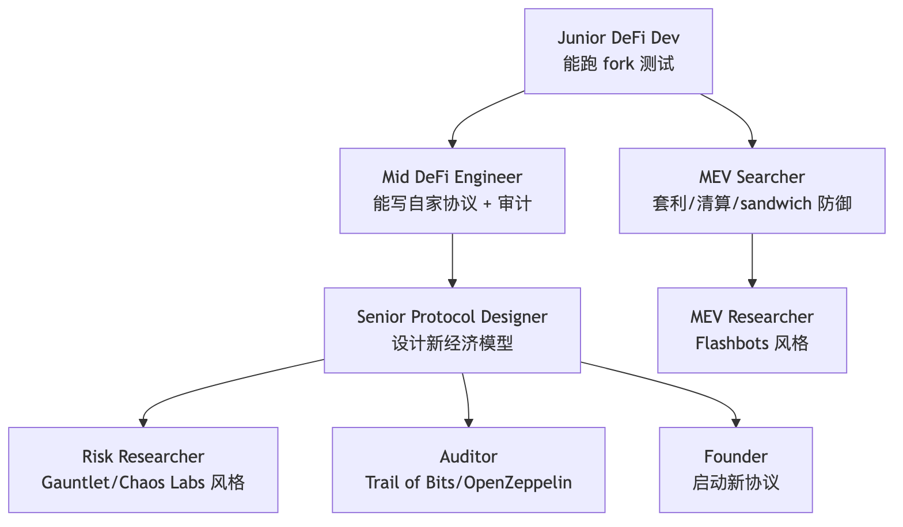
每条路径需要的能力栈： - Protocol Designer：博弈论、机制设计、宏观货币学。 - Auditor：形式化验证（Certora/Halmos）、模糊测试、漏洞模式数据库。 - Risk Researcher：agent-based simulation、ML、金融工程。 - MEV Searcher / Researcher：Rust + EVM、低延迟系统、区块链网络协议。
按"由简到繁"顺序： 1. WETH9（~60 行）：理解 ERC-20 wrap 模式。 2. UniswapV2Pair（~250 行）：理解 PUSH 模式 + flash swap + TWAP。 3. MakerDAO Vat.sol（~500 行）：理解 CDP 核心账本。 4. Liquity TroveManager.sol（~1500 行）：理解极简 CDP 设计。 5. Compound III Comet.sol（~1500 行）：理解 single-base-asset 借贷。 6. Morpho Blue Morpho.sol（~600 行）：理解极简借贷原语。 7. UniswapV3Pool（~1000 行 + 多个库）：理解集中流动性、tick math。 8. UniswapV4 PoolManager.sol（~2000 行）：理解 singleton + flash accounting + hooks。 9. Aave V3 Pool.sol（~3000 行 + 多个 facet）：理解共享池 + e-mode + reserve。 10. EigenLayer 核心合约：理解 restaking + AVS + slashing。
误区 1：TVL = 协议价值——TVL 只是"用户押了多少钱"，不是协议年收入。真实价值看 Revenue / Fees / FDV 三个比例。
误区 2：ZK = 隐私 = 安全——ZK 能用于隐私也能用于扩容（rollup）。ZK rollup 安全性依赖 trusted setup 和 prover 实现正确性。
误区 3：audit 通过 = 安全——审计只降低 known bug 概率。真实安全靠审计 + 形式化验证 + bug bounty + invariant fuzzing + 长期市场考验。
误区 4：multisig 5/9 = 去中心化——Ronin 教训：5/9 multisig 被 social engineering 时仍单点崩溃。真去中心化看 threshold + 地理分布 + 设备分布 + 操作流程。
误区 5：stablecoin 都一样——USDC（合规）≠ USDT（亚洲流通）≠ DAI（CDP）≠ USDe（合成）。选错稳定币等于把协议押在错误对手方风险上。
社区与学习： - Web3Caff Research：中文研究文章质量较高，覆盖协议研究 + 经济模型分析。 - PANews、ChainCatcher、WuBlockchain：行业新闻 + 事故复盘第一时间。 - 登链社区（learnblockchain.cn）：Solidity / 智能合约中文教程。 - WTF Academy：DeFi 教程精炼，适合从 Solidity 切入 DeFi。
研究与数据： - 0xJin / DeFi 之道：DeFi 中文研究博客代表。 - OKX Research、Binance Research：交易所研究部门，覆盖度广。 - Footprint Analytics、KaitoAI：链上数据分析中文支持。
实战社群： - 各大公链官方中文 Telegram / Discord（Aptos/Sui/Sei/Berachain 都有中文社区）。 - 登链开发者大会、ETHGlobal hackathon（每年 5+ 场）。
读源码时按这个清单过：
□ 1. 协议属于 L1/L2/L3/L4 哪一层？对下层做什么假设？
□ 2. 有可升级合约吗？谁有 upgrade key？timelock 多久？
□ 3. Oracle 用什么？心跳多长？有 fallback 吗？
□ 4. 每个外部调用有 reentrancy 保护吗？依赖什么编译器？
□ 5. ERC-4626 vault 怎么防 inflation attack？dead share / virtual offset / internal balance 三选一？
□ 6. 抵押品类 LT/LB 怎么定？谁有权改？
□ 7. 有跨链桥依赖吗？X-of-Y-of-N 配置如何？
□ 8. 治理代币 timelock 多长？有没有 ve 锁仓？
□ 9. fee/profit 流向哪里？是 real yield 还是 emission？
□ 10. 有 slashing 机制吗？slash 阈值由谁触发？
每项写 1-2 行短笔记，10 项过完可在 30 分钟内白板讲清这个协议。